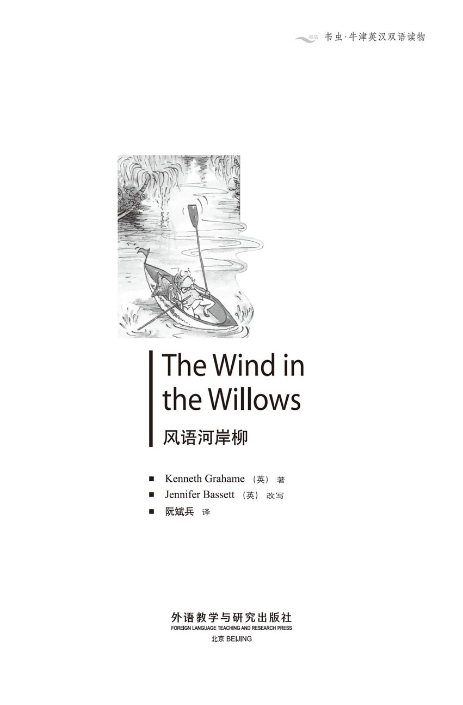
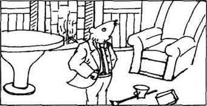
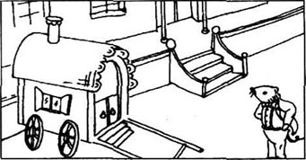
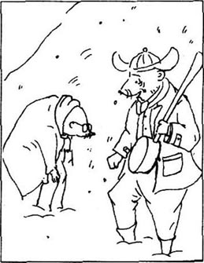
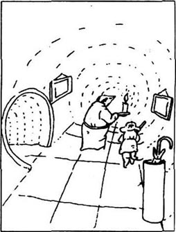
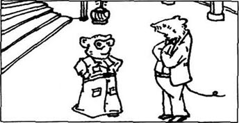
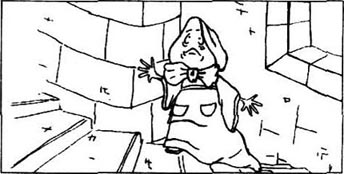
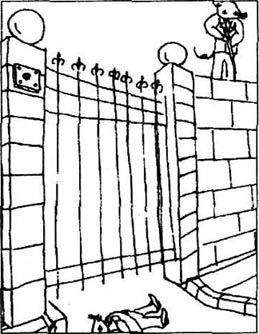
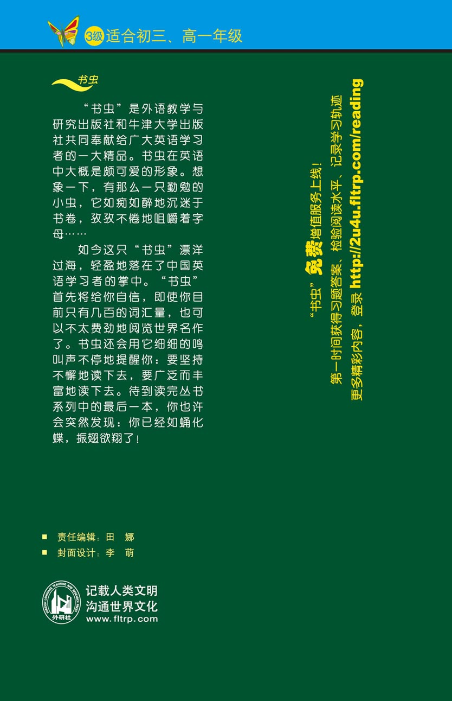

扉页

版权页
京权图字01-97-0339
Originally published by Oxford University Press, Great Clarendon Street, Oxford. © 1995
This edition is licensed for sale in the People's Republic of China only and not for export therefrom.
'Oxford' is a registered trademark of Oxford University Press.
只限中华人民共和国境内销售，不包括香港特别行政区、澳门特别行政区及台湾省。不得出口。
图书在版编目（CIP）数据
风语河岸柳＝The Wind in the Willows／（英）格拉姆（Grahame, K.）著；（英）巴西特（Bassett, J.）改写；阮斌兵译．—北京：外语教学与研究出版社，1997（2014.12 重印）
（书虫·牛津英汉双语读物）
ISBN 978-7-5600-1302-2
Ⅰ．①风… Ⅱ．①格… ②巴… ③阮… Ⅲ．①小说—对照读物—英、汉 Ⅳ．①H319.4：I
中国版本图书馆CIP数据核字（97）第18050号
出版人： 蔡剑峰
责任编辑：田 娜
出版发行：外语教学与研究出版社
社 址：北京市西三环北路19号（100089）
网 址：http://www.fltrp.com
版 次：1998年1月第1版
书 号：ISBN 978-7-5600-1302-2
* * *
凡侵权、盗版书籍线索，请联系我社法律事务部
举报电话：（010）88817519
电子邮箱：banquan@fltrp.com
法律顾问：立方律师事务所 刘旭东律师
中咨律师事务所 殷 斌律师
简介
简 介
“你知道，”鼹鼠说，“我这辈子还从未坐过船。”
“什么？”水鼠叫道。“我亲爱的伙计，你算白活了！相信我，没有什么——真的没有什么——比在船上打发时光更惬意。”
从此，鼹鼠在他的朋友水鼠身边体验到了一种新的生活。在河边，在漫长的金色的夏天，风吹过柳树时，在轻轻低语着它的秘密。生活充满了兴奋和冒险，还有新的朋友：水獭和獾，当然少不了蛤蟆先生——著名的、聪明的、勇敢的、了不起的癞蛤蟆先生……
嗨，那只是蛤蟆先生对自己的评价，他的朋友们可不以为然。当他疯狂迷上驾车时，他变成了一只极愚蠢、极危险的癞蛤蟆……
肯尼斯·格拉姆，1859年生于爱丁堡，死于1932年。他就职于英格兰银行多年，同时也是一名作家。《风语河岸柳》最初只是他讲给他绰号小家鼠的小儿子阿拉斯特听的床边小故事。于1908年出版，从而成为有史以来最著名的儿童读物之一。
目录
1 The river
1
The river
The Mole worked very hard all morning, cleaning his little home. He brushed, and he washed; he cleaned the floors and the walls, he stood on chairs to wash the tops of cupboards, he got under the beds, he took up the carpets. He cleaned and he cleaned, until his arms and his back ached with tiredness.
It was springtime, and the smell arid the sound of spring were everywhere, even in the Mole's dark little house under the ground. And with the spring comes the promise of change, of sunshine, of new green leaves. So it was not surprising that the Mole suddenly put down his brushes and said, 'Oh bother!' and then, 'I'm tired of cleaning!' Something up above the ground was calling to him, and he ran out of his house and began to dig his way upwards to the sun.
He dug and he pushed, and he pushed and he dug. 'Up we go! Up we go!' he said to himself, until at last his nose came out into the sunlight, and he found himself in the warm grass of a field.
'This is fine!' said the Mole. 'This is better than cleaning!' The sunshine was warm on his back and the air was filled with the songs of birds. He gave a little jump for happiness, shook himself, and then began to cross the field towards some trees. Here and there he went, through the fields and the woods, looking and smelling and listening. Everywhere animals and birds were busy, talking and laughing, looking for food, making new homes for the spring. The Mole enjoyed it all.
Then, suddenly, he came to a river. He had never seen a river before in his life — this wonderful bright shining thing, which danced its way in and out of the shadows under the trees. It was never still for a minute, hurrying and laughing and talking to itself.
And at once, the Mole was in love with it. He walked along the river bank, listening and watching all the time. At last he sat down on the grass and looked across the river to the bank opposite. There was a dark hole in the bank, and the Mole watched it dreamily, thinking that it would be very pleasant to have a little house by the river. As he watched, he saw something shining in the hole. Soon he saw that it was an eye, and then a face appeared as well.
A brown little face, with whiskers.
With bright eyes, and small ears, and thick shiny hair.
It was the Water Rat!
Then the two animals stood up and looked at each other.
'Hello, Mole!' said the Water Rat.
'Hello, Rat!' said the Mole.
'Would you like to come over?' asked the Rat.
'Oh, it's easy to talk,' said the Mole, a little crossly. The river was new to him and he did not know how to get to the other side.
The Rat said nothing, and disappeared. Then he appeared again, in a little blue and white boat, which came quickly across the river towards the Mole. It stopped by the bank, and a moment later the Mole, to his great surprise and excitement, found himself actually sitting in a real boat.
'Do you know,' he said, as the Rat began to row away from the bank, 'I've never been in a boat before in all my life.'
'What?' cried the Rat. 'My dear fellow, you haven't lived! Believe me,' he went on seriously, 'there is nothing — really nothing — nicer than just messing about in boats. You can go up river, down river, stay where you are, it really doesn't matter. There's always something to do, but you don't have to do it if you don't want to. You can do what you like. Look here! If you're not busy today, why don't we spend the day on the river together?'
The Mole had listened to all this with great interest. Now he sat back in the comfortable seat and said, 'What a wonderful day this is! Let's start at once!'
But first the Rat went into his hole, and after a while came out carrying a very large and heavy lunch basket. This went into the boat, under the Mole's feet, and then the Rat began to row down river. The two friends talked from time to time, but mostly the Mole just watched the river dreamily, enjoying the sounds and the smells and the sunlight. At last they turned off the big river into a little side river that came down to join it. The Rat stopped the boat and they got out on to a bank of soft green grass under tall willow trees. It was very quiet and very peaceful.
The Mole sat down and looked around him. 'What a beautiful place!' he said happily.
'Time for lunch,' said the Rat, opening the basket. 'Come on, Mole! Let's get to work.'
The Mole was happy to obey, because he was very hungry indeed after all his cleaning earlier in the day. And what a lunch it was! There were cold meats and egg sandwiches, cooked chicken and tomatoes, apples and bananas and a large cake.
When at last they could eat no more, the Mole lay back and watched the river lazily. After a while he sat up.
'I can see a long line of bubbles in the water,' he said. 'I wonder what it is.'
'Bubbles? Oho!' said the Rat, and he called out across the river in a friendly kind of way.
The bubbles stopped and turned. Soon a wet whiskery nose appeared above the edge of the bank, and the Otter pulled himself out and shook the water from his coat.
'A lunch party!' he said, going straight towards the food. 'Why didn't you invite me, Ratty?'
'We didn't plan it,' explained the Rat. 'We only decided to come this morning. Oh, and this is my friend, Mr Mole.'
'Happy to meet you,' said the Otter, and the two animals were friends at once.
'All the world seems to be out on the river today,' said the Otter while he ate. 'I came up this side river to try and get a moment's peace, and then I find you fellows having a lunch party!'
Suddenly there was a noise in the thick bushes behind them, and a big black and white head looked out at them.
'Come on, old Badger!' shouted the Rat.
The Badger came forward a few steps, and then stopped. 'Hmm! A crowd!' he said crossly, and turned his back and disappeared again into the bushes.
'What a pity!' said the Rat. 'Dear old Badger! He's a good fellow, but he does hate a crowd. We won't see him again today. But tell us, who's out on the river?'
'Toad's out, for one,' replied the Otter. 'In his shiny new boat. He's got new boating clothes, and everything!'
The Rat and the Otter. looked at each other and laughed.
'Toad's always trying something new,' the Rat explained to the Mole. 'But he always gets bored so quickly. Last year it was a house-boat, and he wanted to spend the rest of his life living on the river. This year it's rowing-boats.'
'He's a nice fellow, of course,' said the Otter. 'But he never learns from his mistakes!'
From where they sat they could see a bit of the big river. And just then they saw a rowing-boat going past, and in it a short fat animal, rowing very hard and very badly.
'There's Toad going past now,' said the Rat. 'Look at him! He'll turn that boat over in a minute.'
'Of course he will,' laughed the Otter. Toad had now disappeared up river, and the Otter went on, 'Did I ever tell you that story about Toad and the...'
There was a sudden movement in the water near the bank. Something silvery shone for a second, then it was gone. And so was the Otter. The Mole looked down. The Otter's voice was still in his ears, but the Otter had disappeared.
There was just a long line of bubbles in the river.
The Rat sang a little song to himself, and the Mole remembered that it was not at all polite, in the animal world, to say anything if your friends disappeared at any moment, for any reason.
'Well, well,' said the Rat. 'I suppose we should think about going home.'
The Mole packed the things away in the lunch basket, and soon the Rat began to row gently homewards while the afternoon sun went down behind the trees. The Rat was dreaming quietly to himself, but the Mole was very full of lunch and the excitements of the day. He began to think that he knew everything about boats now.
And in a while he said, 'Ratty! Please, I want to row!'
The Rat shook his head with a smile. 'Not yet, my young friend,' he said. 'Wait until you've had a few lessons. It's not as easy as it looks.'
The Mole was quiet for a minute or two. But he wanted to row very much indeed. He was sure that he could row as well as Rat. Then, before the Rat could stop him, he jumped up, and pulled the oars out of the surprised Rat's hands. The Rat fell backwards off his seat, calling out, 'Stop it, you silly fellow! You'll have us in the river!'
The Mole made a great dig at the water with the oars, but the oars never touched the water at all. The Mole's legs flew up above his head, and he found himself lying on top of the Rat in the bottom of the boat. Frightened, he tried to get up, got hold of the side of the boat, and the next moment — splash!
Over went the boat, and the Mole and the Rat and the lunch basket were all in the water.
It was the Rat, of course, who pulled the Mole out of the water, who turned the boat right way up, who found the oars, who got the lunch basket from the bottom of the river. And he laughed and laughed.
When all was ready again, the unhappy Mole sat in the boat very wet and very miserable. As they left, he said in a low voice, 'Ratty, my dear friend! I have been so silly and so ungrateful. I really am very sorry indeed.'
'That's all right!' replied the Rat kindly. 'I'm always in and out of the water myself, so don't worry about it. But I really think you should come and stay with me for a while. You'll be very comfortable, and I'll teach you to row and to swim. Soon you'll be as good a boatman as any of us.'
The Mole was almost too happy to speak and could find no words to thank his friend.
When they got home, they had a good hot supper in front of a bright fire while the Rat told exciting stories of life on the river. Then he took the Mole upstairs to the best bedroom, and soon the Mole was lying warm and comfortable, listening to the sound of his new friend the River running past his bedroom window.
That was the first of many wonderful days for the Mole, as the spring turned slowly into a golden summer. He learnt to swim and to row, and he learnt to love the sound of the wind when it went whispering its secrets through the trees and the plants by the river.
promise n. (sth. that gives) hope of good results. （有良好结果的）希望。
still adj. without movement. 静止的。
whisker n. beard, moustache. 胡须。
crossly adv. angrily. 生气地。
disappear v. go out of sight. 消失。
fellow n. a friendly word for a man (here, a male animal). 伙计。
mess about play around, do pleasant, silly, unimportant things. 闲荡，打发日子。
turn off change directions. 转弯。
join v. connect. 连接，交汇。
bored adj. tired of. 厌倦。
turn... over... upset. 打翻。
silvery adj. like silver. 银色的。
touch v. be in contact with. 接触，碰及。
ungrateful adj. not showing gratitude. 不领情的。
whisper v. speak very softly and quietly, (of wind etc.) rustle. 低语，（风等）发出沙沙声。
1 河
1 河

鼹鼠整个早上都在辛苦地打扫着他的小屋。他扫着，洗着；拖地板，掸墙壁，一会儿站在椅子上擦洗着食品柜顶，一会儿钻进床底清理杂物，一会儿又卷起地毯。他不停地清扫着，直到累得胳膊酸脊背疼。
这正是开春时节，到处都充满了春天的气息，就连鼹鼠这个地下阴暗的小窝里也洋溢着春意。春天，意味着万物变化，阳光明媚，新叶吐芽，所以大家一点也不奇怪鼹鼠突然扔下扫帚感叹道：“噢，真无聊！我讨厌大扫除！”地面上有什么东西在召唤着他，他跑出房间，开始挖洞钻向有阳光照耀的地方。
他挖了推，推了挖，嘴里还喃喃自语着“向上！向上！”最后他的鼻子触到了阳光，他发现他正在一块田地的暖烘烘的草丛里。
“这真不错！”鼹鼠说道，“这比大扫除要好得多！”太阳照在他的背上，暖洋洋的，四周有鸟儿在唱着动听的歌。他高兴地蹦了一下，活动活动筋骨，然后穿过田地向树丛走去。他这里走走，那里转转，穿过田野，逛过树林，最大限度地调动自己的视觉、嗅觉和听觉。各处的动物和鸟儿都一边说笑着，一边忙着找食物，忙着为春天筑新巢。鼹鼠可喜欢这些了。
不知不觉，他来到了一条河边。他至今还从未见过河水——这个明澈耀眼的奇妙之物，它欢蹦乱跳地穿梭在岸边树林的倒影之间。它从不停息，匆匆奔流着，却一路欢声笑语。
鼹鼠马上就喜欢上了它。他沿着河岸走着，并一直听着、看着。最后他坐在草地上欣赏着河对岸的风景。那儿有一个黑洞，鼹鼠出神地看着，心想在河边有一间小房子应该会很惬意的。他看着看着，发现有东西在洞里闪烁。很快他看清那是一只眼睛，然后一张脸也出现了。
一张褐色的小脸，长着几根胡须。
眼睛亮亮的，耳朵小小的，毛厚而发亮。
这是只水老鼠。
于是他们俩都站了起来，看着对方。
“你好，鼹鼠！”
“你好，水鼠！”
“你愿意过来吗？”水鼠问道。
“噢，说起来容易。”鼹鼠有点嗔怪地说。河，对他来说是很陌生的，他不知道怎样才能到达河对岸。
水鼠一声没吭便不见了，不久又出现了，坐在一条蓝白相间的小船上，它很快地向鼹鼠这边驶来，靠岸边停了下来。不一会儿，鼹鼠满怀好奇和兴奋地发现他自己确确实实地坐在了一条真正的船上。
“你知道吗，”当水鼠将船划离河岸时，鼹鼠对他说，“我这辈子还从未坐过船呢。”
“什么？”水鼠叫道。“我亲爱的伙计，你算白活了！相信我，”他一本正经地继续着，“没有什么——真的没有什么——比在船上打发时光更惬意。你可以划向河的上游，或下游，还可以随意停下来，一点问题也没有。总有事做，但如果你不想去做也不用勉强，你可以干你愿意干的事。看这儿！如果你今天没事，我们为什么不一起在河上玩它一整天呢？”
鼹鼠带着极大的兴趣听完了这一切。然后，他向后靠坐在那张舒服的座位上回答道：“这将是多么美妙的一天！我们现在就出发吧！”
但是水鼠先回到了洞里，一会儿又出来了，提着一只又大又沉的午餐篮。他把篮子移进船内鼹鼠的脚下，然后开始向下游划去。这对朋友时不时地聊着天，但更多的时候，鼹鼠仅仅是陶醉般地注视着河水，享受着自然界的声响、气味、还有阳光。最后他们划离主河道转入一条与大河交汇的小支流。然后水鼠把船停了下来，他们就一起上了岸。岸上高大的柳树掩映着一片松软的绿油油的草地，非常安怡恬静。
鼹鼠坐下来，看了看自己的周围，愉快地说道：“多么美丽的地方！”
“该用午餐了，”水鼠边说边打开篮子，“快点，鼹鼠！过来准备吧。”
鼹鼠高兴地服从吩咐，经过一早上的大扫除，他确实非常饿。这是一顿多么丰富的午餐啊！有冷肉和鸡蛋三明治，有炸鸡和西红柿、苹果、香蕉，还有一大块蛋糕。
最后他们再也吃不下了，鼹鼠躺倒在地，懒懒地看着河水。不一会儿，他坐了起来说：“我看见水里有一长串水泡，那是什么？”
“水泡？哦噢！”水鼠友好地向河水那儿叫道。
水泡没了，又转到了另一个地方。很快一个湿漉漉的长着胡须的鼻子出现在河岸边，水獭爬上了岸，抖动着外衣上的水。
“午餐派对！”他边说边径直向食物走去。“你为什么不邀请我，阿鼠？”
“我们不是事先计划好的，”水鼠解释道，“我们今天早上才决定过来的。哦，这是我的朋友，鼹鼠先生。”
“很高兴认识你。”水獭招呼道，这两只动物马上就成了朋友。
“今天所有人似乎都在河上，”水獭边吃边说，“我游到这条支流上是想安静一会儿，不想却碰到你们哥俩在搞午餐派对！”
突然，他们身后浓密的灌木丛里发出了响声，一个大大的黑白脑袋探出头瞅着他们。
“过来，老獾！”水鼠叫道。
獾向前走了几步又停下来，“呣，这么挤！”他愠怒地说着，转身消失在灌木丛里。
“多遗憾！”水鼠叹道，“亲爱的老獾！他人倒不错，就是讨厌人多，今天就甭想见他了。但你给我们说说，谁还在河上？”
“癞蛤蟆出来了，算他一个，”水獭回答道，“坐在他那亮晃晃的新船上，穿着崭新的划船装，总之，什么都是新的！”
水鼠和水獭相互对视一下，然后笑了起来。
“癞蛤蟆总是在尝试新鲜的玩意儿，”水鼠向鼹鼠解释，“但他总是很快又厌倦了。去年是一种房子船，他曾打算在河上度过他的余生。今年他又喜欢上了划艇。”
“当然，他这哥们儿不错，”水獭接着说，“但是他从来不从自己的错误里吸取教训！”
从他们坐的地方能看见大河的一点风景。这时，他们恰好看到一艘划艇经过，一只短粗肥胖的动物正在非常吃力、非常笨拙地划船。
“正朝这边来的就是蛤蟆，”水鼠说，“看他！很快就会把船弄翻的。”
“那是当然的，”水獭笑道，癞蛤蟆此时已不在他们视线里了，水獭继续着，“我曾告诉过你关于蛤蟆的故事和那……”
只见岸边的水突然晃动了一下，什么东西银光一闪便不见了，水獭也一晃眼就离开了。鼹鼠低头看着河水，水獭的声音仍在耳边未落，但身影已消失。河面上仅仅留下了一长串水泡。
水鼠自个儿哼着歌，鼹鼠记起来了：在动物世界里，不管你的朋友在何时为何事突然消失，你都不能发表任何看法，否则就会被视为无礼。
“好了，好了，”水鼠说。“我想我们该准备回家了。”
鼹鼠把东西收拾到午餐篮里，很快水鼠就开始轻松地划着船回去了。午后的太阳已落在树后，水鼠在那儿一声不吭沉浸在自己的梦中，鼹鼠则满肚子的午餐，满脑子的兴奋。他开始认为他现在完全了解船了。
过了一会，他说：“阿鼠！拜托，我想划船！”
水鼠微笑着摇摇头。“还不行，我年轻的朋友，”他说，“等你学了几招再划，这并不像看起来那么简单。”
鼹鼠安静了一两分钟，但是他确实非常想划船，他相信自己能划得像水鼠那样好。紧接着，他跳了起来，水鼠还没来得及阻止，他已从吃惊的水鼠手中抽过船桨。水鼠从座位上摔了下来，叫道：“停下，你这傻蛋！你会把我们弄下水的！”
鼹鼠用木桨在水面上划过很大的弧度，但双桨根本挨不着水，而他的腿已翘过他的头，他发现他正压在摔倒在船底板上的水鼠身上。惊恐中，他试图站起来，便抓住船的一边，只听——扑通一声。
船翻了，鼹鼠、水鼠、午餐篮统统落入水里。
是水鼠，当然是水鼠把鼹鼠拉出水面，是他把船翻正，找回双桨，从河底捞出午餐篮，然后他笑个不停。
待一切收拾停当，鼹鼠不开心地坐在船上，浑身湿漉漉的，非常可怜。当他们起程回家时，他低声地说：“阿鼠，我亲爱的朋友！我是多么愚蠢，多么不知好歹，我真的非常抱歉。”
“没什么！”水鼠友善地回答道，“我总是在水里出入，不要为此担心。但是我真的认为你应该来和我待一段时间。你会很舒服的，我将教你划船，教你游泳，不久你就会和我们划得一样好。”
鼹鼠太高兴了，他简直不知道该说什么来感谢他的朋友。
他们回到家，坐在明亮的火炉前用着可口的热乎乎的晚餐，水鼠边吃边说着河上的生活趣事。然后他把鼹鼠带到楼上最好的卧室，不久鼹鼠就暖和地、舒服地躺下了，聆听着他的新朋友——河水——流过窗边的声音。
那是春天慢慢向金色的夏天转变时，鼹鼠所经历的多彩生活的第一天。从那以后，他学着游泳、划船，还学着去喜欢听风声——听它吹过河边的树木和花草时沙沙低语着自己的秘密。
2 The open road
2
The open road
One bright summer morning the Mole and the Rat were out on the river bank, watching the world go by. The Rat was writing a song and was singing quietly to himself as he tried different words.
'Ratty,' said the Mole, 'could I ask you something?'
'Mmm,' the Rat said, not really listening. 'Sky, fly, high, die, why... Oh dear! What did you say, Mole?'
'Will you take me to visit Mr Toad? I've heard so much about him, and I do want to meet him.'
'Why, of course,' said the Rat kindly. 'Get the boat out, and we'll row up there now. Toad's always happy to see his friends.'
'He must be a very nice animal,' said the Mole, as he got into the boat and took the oars.
'He's the best of animals,' replied the Rat. 'Kind, friendly — not very clever, perhaps, and sometimes he's just a little bit boastful, but he's a good fellow really.'
The Mole rowed hard up the river and in a while they came to a large red house, with beautiful gardens reaching down to the water's edge.
'There's Toad Hall,' said the Rat. 'It's a lovely old house — Toad is very rich, you know, and this is really one of the nicest houses on the river. But we never say that to Toad, of course.'
They left their boat by the boathouse at the end of the garden. The boathouse was full of expensive boats, which looked new and mostly unused.
The Rat looked around him. 'I see that all the boats are out of the water,' he said. 'I suppose Toad has finished with boating now and has some new interest to amuse him.'
They walked over the grass towards the house and soon found Toad, resting in a garden-chair and carefully studying a large map.
'Wonderful!' he cried, as he saw them. 'You're just the fellow that I wanted to see, Ratty.' He jumped up and came towards them, talking all the time, and gave the Rat no time to introduce the Mole. 'I need you very much — both of you. You've got to help me. It's most important!'
'It's about your rowing, I suppose,' said the Rat, keeping his face very serious. 'You will learn to do it in the end, you know, if you're patient and work hard and—'
'Oh, bother boats!' the Toad said crossly. 'I've finished with boats. Silly way to pass the time. No, I've discovered the real thing — the best way, the only way, to spend one's life. Come with me, dear Ratty, and your kind friend too, and I will show you!'
He took them round to the other side of the house, and there they saw a shiny new gipsy caravan. It had yellow and green sides, and red wheels.
'There you are!' cried the Toad. 'There's real life for you. The open road, the fields, the hills... villages, towns, cities! Here today, off to a different place tomorrow! Travel, change, interest — the world in front of you!'
The Mole was very interested and excited, and followed the Toad inside the caravan to look around. But the Rat shook his head and waited outside.
When they came down the steps again, the Toad was still talking excitedly to the Mole. 'So you see, everything is ready for when we start this afternoon.'
'What was that?' said the Rat slowly. 'Did you say "we" and "start" and "this afternoon"?'
'Now, dear good old Ratty,' said Toad quickly, 'don't talk in that cross voice. You know you've got to come. You can't stay by your boring old river all your life. I want to show you the world!'
'I don't care,' said the Rat calmly. 'I'm not coming, and that's final. I'm going to stay by my old river, and what's more, Mole's going to stay with me, aren't you, Mole?'
'Of course I am,' said the Mole bravely. But his face looked sad. Poor Mole! He thought that life in a caravan on the open road would be an exciting adventure.
The Rat saw his sad face and felt worried. He liked his friends to be happy and he could see that the Mole really wanted to go.
Toad watched them both carefully. 'Come on in and have some lunch,' he said pleasantly, 'and we'll talk it over.'
During lunch — which was excellent, of course, because everything at Toad Hall always was — the Toad talked and talked. He was full of wonderful plans. How interesting each day would be! What adventures the three friends would have together! Ah, the happiness of the travelling life!
In the end, of course, the Rat agreed to go, and by the evening they found themselves on a lonely hillside miles from home. It had been a golden afternoon, and even the Rat had enjoyed the journey so far. Only the old grey horse was not very happy. He had to do all the hard work of pulling the caravan, and he was not at all pleased about it.
The next morning the Toad was still sleeping deeply when the other two got up. They shook him very hard but couldn't wake him, so they had to do all the work. The Rat took care of the horse, lit the fire, and did last night's washing-up. The Mole walked to the nearest village, a long way away, to get milk and eggs and bread, which the Toad had, of course, forgotten to bring. And when at last the Toad got up, he said what a pleasant easy life it was on the open road.
The day passed happily as they travelled over green hills and along narrow country roads. But the next morning the Rat and the Mole got Toad out of bed and made sure that he did some of the work. Because of this, Toad said very little about a pleasant easy life. Later, he even tried to get back into bed, but the Mole and the Rat pulled him out again.
The end of their journey came very suddenly. In the afternoon they were travelling along a big road. The Mole was walking beside the horse, and the Toad and the Water Rat were walking behind the caravan, talking together. Actually, the Toad was talking, and the Rat was listening — some of the time.
Then they heard a noise behind them, and looking back, they saw a small cloud of dust. It made a 'Poop-poop!' sound, and it was coming towards them very fast indeed.
Seconds later, the peace of the afternoon was destroyed in a storm of noise and wind and dust. The 'poop-poop' rang with a shout in their ears, and an enormous, long, shining motorcar roared past them and disappeared over the hill.
The old grey horse, wild with fear, tried to get off the road. The caravan's wheels began to go down into the ditch along the edge. Then there was a terrible crash — and the beautiful yellow and green caravan lay helplessly on its side.
The Rat jumped up and down in the road, shouting angrily. 'Stupid, dangerous people! The police should lock you up in prison!'
He and the Mole managed to calm the horse, and then they went to look at the caravan. Two wheels had come off, the windows were broken, and bits of wood lay everywhere. They tried to pull it out of the ditch, but they couldn't move it.
'Hi! Toad!' they cried. 'Come and help us, can't you!'
The Toad never answered a word, so they went to see what was the matter with him. They found him sitting in the middle of the road, with a dreamy smile on his face and happily whispering, 'Poop-poop!'
The Rat shook him, not very gently. 'Are you coming to help us, Toad?' he asked crossly.
'Oh, what happiness!' whispered Toad to himself. 'The real way to travel! The only way to travel! Here one minute — miles away in seconds! Wonderful! Poop-poop!'
'Oh, do stop being so silly, Toad!' cried the Mole.
'And I never knew!' the Toad went on dreamily. 'I never dreamt! What clouds of dust will fly up behind me as 1 drive like the wind! I've finished with silly old caravans for ever. Poop-poop!'
'What are we going to do with him?' the Mole asked the Water Rat.
'Nothing,' replied the Rat. 'There's nothing that we can do. I know Toad. When he gets a new idea into his head, he always goes crazy at first. He'll be like this for some days now. Come on, we'll have to do everything by ourselves.'
They had to leave the caravan in the ditch and walk to the nearest town, five or six miles away. There they asked somebody to take care of the horse, and found somebody who agreed to fetch the broken caravan. Then they caught a train to a station near Toad Hall, took Toad home, went down to the boat, and then at last they sat down to a late supper in Rat's comfortable little home by the river.
The next day was a lazy one. In the evening the Mole was sitting on the river bank fishing, when the Rat, who had been to visit friends, came to find him.
'Heard the news?' the Rat said. 'Everybody's talking about it, all along the river bank. Toad went up to town by an early train this morning. And he has ordered a large and very expensive motor-car.'
boastful adj. fond of self-praising. 好自夸的。
amuse v. enjoy. 使快乐。
patient adj. able to endure or wait for sth. 耐心的。
bother int. （表示不耐烦）讨厌；去他的。
caravan n. covered wagon. 篷车。
bravely adv. courageously. 勇敢地。
adventure n. exciting or dangerous journey or activity. 刺激冒险的经历。
lonely adj. far from inhabited places. 偏僻的。
destroy v. put an end to. 摧毁。
roar v. make loud, deep sounds. 咆哮。
ditch n. narrow channel. 水沟。
helplessly adv. unable to act. 无助地。
gently adv. softly. 轻轻地。
2 宽敞的公路
2 宽敞的公路

一个灿烂的夏日早晨，鼹鼠和水鼠在河岸边散步，欣赏着世界的变幻。水鼠正在写一首歌，他试着用不同的词轻声地自哼自唱。
“阿鼠，”鼹鼠说，“我能问你一些事吗？”
“呣，”水鼠似听非听地说着，“天空、飞翔、高潮、死亡，为什么……噢，亲爱的！你说什么，鼹鼠？”
“你能带我去拜访癞蛤蟆先生吗？我已听了许多有关他的事，我确实想见他。”
“呃，当然，”水鼠和善地说，“把船拉出来，我们现在就划过去，蛤蟆一直都很乐意见他的朋友。”
“他一定是只很不错的动物。”鼹鼠边说边走上船拿起双桨。
“他是动物中最好的，”水鼠回答道。“善良，友好——也许不很聪明，有时他仅仅有点爱吹牛，但是他确实是个好人。”
鼹鼠吃力地向上游划着，不一会儿他们到了一所大大的红房子前面，那儿美丽的花园一直延伸到水边。
“那是蛤蟆宅第，”水鼠说，“一所可爱的老宅——癞蛤蟆很富有，你知道吧，这是河边最好的房子之一。当然我们从来没有对蛤蟆这样说过。”
他们把船停在花园尽头的船室里，船室内停满了昂贵而崭新的船，看上去大多没用过。
水鼠看了看他的周围，说：“我发现所有的船都没停在水里，我猜蛤蟆现在不再玩船了，肯定又有什么新鲜有趣的东西吸引着他。”
他们穿过草坪向房子走去，很快便看见了癞蛤蟆，他正坐在花园椅里仔细地研究着地图。
“太棒了！”癞蛤蟆一看到他们就叫了起来。“我正想见你呢，阿鼠，”他跳了起来，向他们走去，嘴里说个不停，根本不给水鼠时间来介绍鼹鼠。“我非常需要你——你们俩。你们得帮我，这是最最重要的！”
“我想，是关于划船吧，”水鼠一本正经地说。“你总算要学了，你知道吧，如果你耐心点，刻苦点，再——”
“噢，讨厌的船！”癞蛤蟆气恼地说，“我不再划船了，简直是打发日子的傻办法。是的，我已发现了一个真正的活法——最好的、唯一的活法。跟我来，亲爱的阿鼠，还有你好心的朋友，我要带你们去看看！”
他带他们绕到了房子的另一头，那儿他们看见一辆锃亮崭新的吉普赛大篷车，镶滚着黄绿边，轮子是红色的。
“你们看！”癞蛤蟆叫道，“这才是属于你们的真正的生活。宽敞的公路、原野、山峦……村庄、城镇、都市！今天在这儿，明天到另一个不同的地方！旅行、变幻、趣味——世界就在你的面前！”
鼹鼠觉得非常有趣，非常兴奋，他跟着癞蛤蟆走进大篷车参观，但水鼠摇着头，在外面等着。
当他们再次踩踏脚板下来时，蛤蟆仍兴奋地对鼹鼠说：“你看见了，一切已准备就绪，我们今天下午就出发。”
“你说什么？”水鼠慢慢地说，“你是说‘我们’‘今天下午’‘出发’？”
“好了，亲爱的好阿鼠，”蛤蟆急忙说，“不要用那种厉害的口气说话，你知道，你该有所进展了，你不能一辈子待在你那条乏味的老河边，我想带你看看外面的世界！”
“我不在乎，”水鼠平静地说，“我不想有所改变，这就是我最终的决定，我将待在我的老河旁，另外，鼹鼠将和我待在一起，是不是，鼹鼠？”
“当然，是这样。”鼹鼠勇敢地说，但却显得有些垂头丧气，可怜的鼹鼠！他想：坐在大篷车里走在宽敞的公路上的生活一定很刺激很有趣。
水鼠看着他那伤感的样子，很担心。他希望他的朋友开心快乐，他能看出鼹鼠真的想去。
癞蛤蟆审视着他们俩，然后愉快地说：“进来用点午餐，然后再聊这事。”
就餐时——午餐当然是一流的，因为蛤蟆宅第的一切总是如此——癞蛤蟆说个没完。他满脑子美妙的计划，每一天都将多么有趣！他们三位朋友在一起将会有多么刺激兴奋的经历！啊，幸福的旅行生活！
最后，当然，水鼠同意去了。傍晚他们到了离家数里的一个孤零零的山坡上。那是一个金色的下午，现在甚至水鼠也非常喜欢这次旅行。只有老灰马不很乐意，他得干所有拉大篷车的苦力活，他根本就不爱这份工作。
第二天早上，水鼠和鼹鼠起床了，癞蛤蟆还在呼呼大睡。他们俩用力摇他，但弄不醒他，因此他们不得不干所有的活。水鼠照料马，生起火，还清洗了昨晚的脏物。鼹鼠则步行长长的一段路到最近的村庄去弄些牛奶、鸡蛋和面包，这些，癞蛤蟆当然忘了随车带来。最后癞蛤蟆起床了，他说，在宽敞公路上的旅行生活是多么轻松愉快。
然后，他们翻过青山，沿着一条狭窄的乡村小路旅行着，就这样快快乐乐地过了一天。但是第三天早上，水鼠和鼹鼠把癞蛤蟆从床上拉了起来，要他也干些活。就为这，癞蛤蟆很少再说多么轻松愉快之类的话了。后来他甚至还想回到床上继续睡觉，但鼹鼠和水鼠又把他拉了出来。
他们的旅行结束得很突然。那天下午，他们正行进在一条大马路上，鼹鼠走在马旁，癞蛤蟆和水鼠在大篷车后面边走边聊着天，确切地说——很多时候——癞蛤蟆在说，水鼠在听。
这时他们听见身后有什么声音，便回过头，只见一小团尘雾，发着“扑扑、扑扑”的声音，正朝他们疾速地席卷而来。
几秒钟之后，下午的宁静就在一阵嘈杂中、风中和尘雾中被打破了。伴随着震耳欲聋的“扑扑、扑扑”声，一辆巨大的、长长的、锃亮的汽车从他们身边呼啸而过，消失在山那边。
老灰马极度恐惧试图离开公路。大篷车的轮子便开始顺着路沿向沟里滑去，然后只听见一阵可怕的稀里哗啦声——美丽的黄绿大篷车无助地歪倒在地。
水鼠在公路上又蹦又跳，愤怒地喊道：“愚蠢、危险的人！警察应该把你们关在监狱里！”
他和鼹鼠设法使老马安静，然后开始检查大篷车。车的两只轮子掉了，窗子也摔烂了，木头片到处都是。他们试着把它从沟里拉出来，但却弄不动它。
“嗨，癞蛤蟆！”他们叫道，“过来帮帮我们，行不行，你！”
癞蛤蟆不答一句话，因此他们走过去看看他是怎么了。只见他坐在公路中间，脸上挂着梦幻似的微笑，嘴里愉快地嘟哝着，“扑扑、扑扑！”
水鼠用力地摇着他，“你能不能过来帮帮我们，癞蛤蟆？”他生气地问。
“噢，多么幸福！”癞蛤蟆自言自语道，“旅行的真正方式！旅行的唯一方式！刚才在这儿，几秒钟后就在数里之外！太棒了！扑扑、扑扑！”
“噢，不要犯傻了，癞蛤蟆！”鼹鼠叫道。
“而我竟不知道！”癞蛤蟆仍然魂牵梦萦似地继续着，“我从未梦想过！当我风驰电掣似地驾车时，多少尘雾将在我身后扬起！那辆可笑的愚蠢的大篷车将永远消失。扑扑、扑扑！”
“我们拿他怎么办？”鼹鼠问水鼠。
“没办法，”水鼠回答道，“我们什么也帮不了。我了解癞蛤蟆，当他有了新的想法时，刚开始他总是有些疯狂。他像这样还得过一些日子。过来，我们得自己干完这一切。”
他们不得不将大篷车先留在沟里，步行到五六英里以外最近的城镇。在那儿，他们叫人照看灰马，又找了个愿意取回破车的人。然后他们坐火车到蛤蟆宅第附近的车站，把癞蛤蟆送回家后，他们坐上船，最后终于坐在了水鼠舒服的河边小屋吃迟到的晚餐。
第二天是慵懒的一天。傍晚时分鼹鼠坐在河岸钓鱼，水鼠拜访朋友回来后找到了他。
水鼠对他说：“听到消息了吗？河岸边的每个人都在谈论这件事。癞蛤蟆今早搭头班火车去了城镇，订购了一辆非常昂贵的大汽车。”
3 The Wild Wood
3
The Wild Wood
The Mole had wanted for a long time to meet the Badger. He often spoke about his wish to the Water Rat, but the Rat didn't seem to want to do anything about it.
'It's all right,' the Rat always said. 'Badger will come past one day, and then I'll introduce you.'
'Couldn't you invite him to dinner or something?' asked the Mole.
'He wouldn't come,' said the Rat. 'He hates crowds, and parties, and dinners, and all that kind of thing.'
'Well then, shall we go and visit him?'
'Oh, no!' the Rat said. 'He's very shy, and he wouldn't like that at all. I know him very well, but I've never visited his home. And it's not really possible to go there, because he lives right in the middle of the Wild Wood.'
'You said you would tell me about the Wild Wood,' said the Mole, 'but you never did. Aren't they — aren't they very nice people in there?'
'Well,' said the Rat, 'the squirrels are all right, and the rabbits — most of them. And Badger, of course. He likes living there. And nobody gives him any trouble.'
'But who could give trouble?' asked the Mole.
'There are, well, others,' the Rat went on slowly. 'Weasels... stoats... ferrets, and so on. They're all right in a way. Most of the time. But, well, you wouldn't want to turn your back to them in the dark, and that's a fact. Don't worry about Badger. He'll come along one day.'
But the summer passed and the Badger never came along.
Soon the days grew shorter, and the cold weather kept the animals inside their comfortable houses. The Rat slept a lot in the winter, going to bed early and getting up late. During his short day, he wrote songs and did small jobs in the house. And, of course, there were always animals calling in for a comfortable talk round the fire, telling stories and remembering the good times and the adventures of the past summer.
One afternoon, while the Rat was sleeping peacefully in front of the fire, the Mole decided to go out by himself and take a walk in the Wild Wood. 'Perhaps,' he thought, 'I'll meet Mr Badger, and then I can introduce myself.'
It was a cold afternoon, with a hard grey sky. The Mole hurried along, enjoying the quietness of the winter day, and after a time he saw in front of him the black shape of the Wild Wood.
He was not at all frightened at first. It was a strange, dark place, but the Mole found that exciting. He went deeper and deeper into the wood, where the light was less and the trees grew close together. Everything was very still now, and the darkness seemed to come down quickly, shutting the Mole off from the outside world.
Then the faces began.
Out of the corner of his eye, the Mole thought that he saw a face looking at him from a hole: a little narrow face, with hard unfriendly eyes. When he turned to look straight at it, the thing had disappeared.
He hurried on, telling himself not to be silly. He passed another hole, and another, and — yes! Eyes were looking at him, then disappearing again into the darkness. Soon, every hole had a face, which watched him with eyes full of hate.
The Mole felt he had to get away from these faces. He turned off the path and hurried into the thickest part of the wood.
Then the whistling began.
It was soft, and far behind him, when he first heard it. Then it seemed to come from in from of him, more loudly. The Mole stopped and listened, then went on again. He was trying hard to stay calm, but his heart was beating very fast. He was alone, and far from help, and the night was coming down quickly.
Then the pattering began.
At first he thought it was only falling leaves, but then the noise grew louder and nearer, and the Mole knew what it was. It was the sound of little feet running — behind him, in front of him, on all sides of him. All the wood seemed to be alive, running, following, chasing something — or somebody. The frightened Mole began to run too, but he did not know where. He ran into trees and bushes, he fell over things and into things, he picked himself up and ran on. At last he found a deep dark hole in the bottom of an old tree and fell into it, too tired to run another step. He lay there. shaking with fear, and listened to the whistlings and the patterings outside. Now he understood why the Rat did not want to talk about it, and why other small animals from the fields and the river bank never came here. Because now, the Mole had felt it himself — the Terror of the Wild Wood.
All this time the Rat, warm and comfortable, was sleeping in front of his fire. When he woke up, he looked round for his friend, but the Mole was not there. He called out 'Moly!' several times, and when he heard no answer, he got up and went out into the hall.
The Mole's hat was missing, and so were his boots.
The Rat left the house and looked around. The ground was soft from rain, and he could see clearly which way the Mole had gone — straight towards the Wild Wood.
The Rat stood thinking for a moment, looking very serious. Then he went back into the house, took a gun and a thick heavy stick, and hurried away across the fields.
Inside the wood it was nearly dark, and the whistling and the pattering began almost at once. But when the faces in the holes saw the Rat's gun and his thick heavy stick, they disappeared immediately, and everything became still and quiet. Patiently, the Rat began to search the wood from end to end, calling all the time, 'Moly, Moly! Where are you? It's me — it's old Rat!'
At last, to his great happiness, he heard a little answering cry, and soon he found the Mole in his hiding-place in the tree.
'Oh, Ratty!' cried the Mole. 'I'm so pleased to see you! I've been so frightened, I can't tell you!'
'I can understand that,' said the Rat kindly. 'You see, Mole, it's really not a good idea to come here alone. We river-bankers always come in twos or threes, if we have to come here. Of course, if you're Badger or Otter, then there's no problem.'
'Surely the brave Mr Toad is happy to come here alone, isn't he?' asked the Mole.
'Old Toad?' said the Rat, laughing loudly. 'He doesn't put his nose inside the Wild Wood — much too frightened!'
The Mole felt a little happier when he heard this, but he was still too tired to start the journey home. So he lay down to sleep under some dry leaves, while the Rat sat next to him, patiently waiting.
The Mole woke up feeling much better, and ready to leave. The Rat put his head out of the entrance of the hole, and then the Mole heard him say, 'Oh dear, oh dear!'
'What's the matter, Ratty?' asked the Mole.
'Snow,' replied the Rat. 'It's snowing hard. But we can't stay here all night — it's too cold, and too dangerous. We'll just have to start walking, and hope. The trouble is, I don't really know where we are, and in the snow everything looks so different.'
It did indeed. The white blanket of snow covered everything, hiding the paths, changing the shapes of the trees and bushes. An hour later, they were wet, cold, aching with tiredness, and had no idea where. they were.
They sat down for a rest and were moving on again when the Mole gave a sudden cry and fell forward on his face.
'Oh, my leg!' he cried. 'I've hit my leg on something really hard.'
'Let's have a look,' said the Rat, sitting down beside him. 'That's a very deep cut,' he said, surprised. 'I wonder what...' Suddenly, he got up and began to dig in the snow.
'What are you doing, Ratty?' said the Mole.
The Rat just went on digging. Then he found something, and immediately began to dance round it excitedly.
'Look at this, Mole!' he shouted. 'Just look at this!'
The Mole looked. Then he looked at his friend. 'It's a door-scraper. Why get excited about a door-scraper?'
'Don't you understand, you silly animal?' cried the Rat.
'I understand that somebody's been very careless, leaving a door-scraper lying in the middle of the Wild Wood, for other people to fall over. And when I get home—'
'Oh, dear, oh dear!' cried the Rat. 'Just stop arguing, and dig! Or do you want to spend all night in the snow?'
The Mole did what he was told, although he thought his friend was going crazy. The two animals dug and dug, and after ten minutes' hard work they were successful.
The Mole had thought that they were digging into a snow-bank, but now he saw that there was a door under the snow. A green door, with a long bell-pull beside it, and a name on it in big letters which said:
MR BADGER
The Mole fell backwards on the snow in surprise. 'Oh, Rat!' he cried. 'How clever you are! And how stupid I am!'
'Never mind all that.' said the Rat. 'Just get up and pull on that bell, while I knock on the door.'
The Rat banged on the door with his stick, and the Mole pulled. And from somewhere far under the ground they could just hear the sound of a deep, slow bell.
peacefully adv. quietly. 静静地。
hurry v. move quickly. 急赶。
whistle v. make a sound by blowing through nearly closed lips. 口哨。
patter n. sound of quick, light footsteps. 轻快的脚步声。
frightened adj. afraid. 害怕的。
terror n. very great fear. 恐怖。
search v. look carefully through. 搜寻。
hiding-place n. place where keeps sb. or sth. out of sight. 隐藏处。
blanket n. thick, wollen covering. 地毯，毛毯。
ache n. pain. 痛。
cut n. opening made by a knife or other sharp-edged tools, etc. 破口。
snow-bank n. flat-topped mass of snow. 状似堤岸的雪堆。
bang n. violent blow. 猛击。
3 野树林
3 野树林

很长时间以来鼹鼠一直想见獾，他时常把这个愿望告诉水鼠，但水鼠似乎对此无动于衷。
他总是说：“没问题，獾总有一天要经过这儿，到时我会把他介绍给你。”
“你能不能邀请他吃饭或别的什么？”鼹鼠问道。
“他不愿意来。他讨厌人群、派对、聚餐和诸如此类的事。”
“那么，我们是不是应该去拜访他？”
“噢，不！”水鼠答道，“他非常害羞，他根本就不喜欢来访。我跟他很熟，但我从没去过他家。而且去那儿也不大可能，因为他刚好住在野树林中间。”
“你说过要告诉我一些关于野树林的事，但你从没谈过。他们——他们那儿的人不是很好吗？”
“喔，”水鼠说，“松鼠很好，还有野兔——他们中大多数都不错，当然还有獾。他喜欢住在那儿，而且谁也不敢给他找麻烦。”
“但是谁会惹麻烦呢？”鼹鼠问。
“有那么一些，”水鼠不紧不慢地继续说，“黄鼠狼……大白鼬……雪貂等等。大部分时间里他们一般都不错，但是，在黑暗中你别想背对着他们的，这是事实。不要担心獾，他总有一天要经过这儿的。”
但是夏天过去了，獾还是没来过。
不久，白天越来越短，寒冷的天气使得动物们都待在他们舒适的家里。水鼠在冬季也是早睡迟起，瞌睡很多。在短短的白天里，他在家里写些歌，干些小活。当然，总是有些动物来串门，围坐在火炉边舒舒服服地闲聊，说说故事，回忆逝去的夏日里的美好时光和冒险经历。
一天下午，水鼠在火炉前安睡，鼹鼠决定独个儿出去，到野树林里散散步。“也许，”他想，“我能碰见獾先生，然后我可以作个自我介绍。”
那天下午很冷，天空阴沉沉的。鼹鼠向前赶着路，享受着冬日里的宁静，一会儿，他就看见了前面野树林黑黝黝的轮廓。
这是一个陌生、阴暗的地方，他起先一点也不害怕，反而觉得很兴奋。他向森林深处走着走着，光线越来越淡，树木长得越来越密。现在一切非常安静，黑暗似乎一下子笼罩下来，将鼹鼠与外面的世界隔绝开来。
然后，出现了许多脸。
从他的眼角，鼹鼠觉得他看见了一张脸正从一个洞里盯着自己：一张小小的、窄窄的脸，一双锐利而不友善的眼睛。当他转过去直视它时，那小东西便不见了。
他一边向前奔着，一边告诉自己不要犯傻。他走过一个又一个洞，哇——是的！一双双眼睛在盯着他，然后又消失在黑暗里。很快，每个洞里都有一张脸，用那充满仇恨的眼睛观察着他。
鼹鼠感到他得避开这些脸，于是他离开这条道，向树林最茂密处奔去。
这时，口哨声响了。
他刚听到这种柔和的声音时，觉得是从身后远远的地方发出的。然后这哨声似乎又来自于他的前面，而且声音更响。鼹鼠停下来，听了一会儿，然后继续向前赶路。他努力使自己平静下来，但他的心跳得飞快。他孤立无援，而且夜很快就要降临了。
然后响起了啪嗒声。
起先他以为只是落叶声，但声音越来越大，越来越近，鼹鼠知道是什么了。这是小脚奔跑的声音——在他身后，身前，以及他的四周。整个树林似乎都活了，奔跑着，跟随着，追赶着什么东西或什么人。鼹鼠吓坏了，也开始跑，但他不知道身在何处。他跑进树林和灌木丛里，摔倒在这个或那个东西上面或里面，然后爬起来继续跑。最后他发现一棵老树根部有个深深的黑洞，他掉了进去，累得再也跑不动了。他躺在那儿，听着外面的哨声和脚步声，吓得浑身发抖。现在他知道了为什么水鼠不想谈野树林，为什么田野和河岸上别的小动物从不来这儿，因为现在鼹鼠他自己感受到了它——野树林的恐惧。
这段时间里，水鼠正舒服地睡在暖暖的火炉前。当他醒来，看看四周，没有看到他的朋友。他叫了几声“阿鼹！”，没有回答，他便站了起来，走进客厅。
鼹鼠的帽子不见了，靴子也不在。
水鼠走出屋子，四处看了看。雨后的地面很松软，他能清楚地看见鼹鼠所走的路线——直指野树林。
水鼠显得非常严肃，站在那儿想了一会儿。然后他转身回到屋里，取了一杆枪和一根粗重的木棍，穿过田野向树林奔去。
树林里几乎漆黑一片，哨声和啪嗒声几乎是同时开始。但是当洞里的脸看见水鼠手中的枪和粗棍时，便马上消失了，一切又恢复了平静。水鼠开始耐心地在树林里搜寻，并一直叫着：“阿鼹，阿鼹！你在哪里？是我——我是老阿鼠！”
最后他非常非常高兴地听到了低低的带有哭腔的回答声，很快他便在树底里找到了鼹鼠的藏身处。
“噢，阿鼠！”鼹鼠哭叫着，“我真高兴见到你！我好害怕，我都不知该怎么说！”
“我能理解，”水鼠和善地说，“你看，鼹鼠，独自来这儿真不是好主意。我们河边动物如果有事非来不可时总是三三两两地来这儿。当然如果是獾或水獭，那就没问题。”
“勇敢的癞蛤蟆先生肯定高兴独自来这儿，是不是？”鼹鼠问。
“老蛤蟆？”水鼠大声地笑起来，“他甚至不敢把他的鼻子伸进野树林——他怕得要命！”
鼹鼠听了这个觉得有点儿开心，但他还是太累而不能启程回家。于是他躺在一些干叶上睡着了，水鼠坐在他的身边耐心地等待着。
鼹鼠醒来感到好多了，便准备离开这儿。水鼠把头伸出洞口，这时鼹鼠听到水鼠叫到：“啊呀，啊呀！”
“怎么啦，阿鼠？”鼹鼠问。
“下雪了，”水鼠答道，“雪下得可大啦。但是我们不能在这儿待一晚上——这太冷，而且很危险。我们得马上动身，这样还有些希望。麻烦的是，我真的不知道我们在哪儿，雪天里什么看起来都与往日不同。”
的确是变了样。雪像白色的毛毯覆盖了一切，遮了小路，改变了树林和灌木丛的形状。一小时以后，他们又湿又冷，累得浑身酸疼，但还是不知道身在何处。
他们坐下来休息了一会儿，又继续向前赶路，这时鼹鼠突然叫了起来，向前摔扒在地。
“噢，我的腿！”他叫道，“有个好硬的东西磕了我的腿。”
“让我看看。”水鼠说着，坐到他的身边。
“好深的一个口子，”他有些吃惊地说，“我想知道什么……”突然他站起来，开始在雪地里挖着。
“你在干什么，阿鼠？”鼹鼠问。
水鼠只是不停地挖。然后他发现了什么，马上开始激动地绕着它跳舞。
“看这，鼹鼠！”他喊道，“就看这！”
鼹鼠看了看，然后又看看他的朋友，“这是门铲，为什么对门铲这么感兴趣？”
“你难道不懂？你这个傻蛋。”水鼠叫道。
“我知道是有人大意，把门铲乱扔在野树林中间绊人。而且当我回家时——”
“噢，天哪！”水鼠叫道，“别说了，赶快挖！难道你想在雪地里度过整个晚上？”
鼹鼠便按吩咐干着，尽管他觉得他朋友有些疯疯傻傻。这对朋友挖呀挖呀，经过十分钟的辛苦努力，他们终于成功了。
鼹鼠原以为他们挖的是一个雪堆，但现在他看见雪下有一扇门。一扇绿色的门，旁边有一根长长的门铃拉绳，门上用大大的字体写着：
獾 先 生
鼹鼠吃惊地向后坐倒在雪地上。“噢，水鼠！”他叫道，“你真聪明！我真是太笨了！”
“不要说这些了，”水鼠说，“赶快站起来拉那个门铃，我来敲门。”
鼹鼠便去拉门铃，水鼠则用他的棍子猛敲着门。他们能听见从地底下一个远远的地方传来的低沉悠长的门铃声。
4 A meeting with Mr Badger
4
A meeting with Mr Badger
They waited patiently for a very long time, jumping up and down in the snow to keep warm. At last they heard feet coming slowly towards the door. Then the door opened, just enough to show a long nose and pair of sleepy eyes.
'And who,' said a deep, angry voice, 'is making visits at this time of night?'
'Oh, Badger,' cried the Rat, 'let us in, please. It's me, Rat, and my friend Mole, and we're lost in the snow.'
'What?' said the Badger, in a very different voice. 'My dear Ratty! Lost in the snow, and in the Wild Wood! Come in at once, both of you, and get yourselves warm.'
That was a wonderful moment for the Mole and the Rat, when they heard the door close behind them, shutting out the Wild Wood. They followed the Badger down long dark tunnels until they came into a large kitchen. There was a bright fire, with comfortable armchairs round it, and a great wooden table with long seats.
'This is not the kind of night for small animals to be out,' the Badger said, in a fatherly way. 'Sit yourselves down by the fire, while I get you some supper.'
Soon the Mole and the Rat were warm and dry, and the dangers of the Wild Wood seemed a long way away, like a bad dream. Then supper arrived. It was enough for ten small hungry animals, and the Rat and the Mole realized just how hungry they were. When at last they could eat no more, they sat with the Badger round the fire, and told him the story of their adventures.
Then the Badger said, 'Now then! Tell me the news from your part of the world. How's old Toad getting on?'
'He's going from bad to worse,' said the Rat sadly. 'He had another crash only last week, and a bad one. You see, he thinks he's a wonderful driver, the best in the world. But he isn't. He's terrible! But he won't take lessons, he won't listen to anyone.'
'How many has he had?' the Badger asked.
'Crashes, or motor-cars?' asked the Rat. 'Well, with Toad, it's the same thing. This is the seventh car, and the seventh crash. His garage is full to the roof with bits of broken motor-car!'
'He's been in hospital twice,' the Mole added. 'The police have arrested him for dangerous driving three or four times. And he's spending so much money!'
'That's another problem,' the Rat went on. 'Toad's rich, we all know that; but his money won't last for ever. Sooner or later, one of two things will happen. He'll kill himself in a crash, or he'll have no money left at all. Badger! We're his friends — can't we do something?'
The Badger thought for a while. 'You know, don't you, that I can't do anything now?' he said at last.
'No, no, of course not,' the Rat and the Mole said together. Everybody knew that in the animal world the winter was a time for rest and sleep. Nobody wanted to do anything important or tiring.
'Very well,' continued the Badger. 'But when the days are longer and warmer, then we'll do something. We — you and me and our friend the Mole here — we'll try to teach Toad a lesson. We won't listen to any silliness. We'll bring him back to reason, and turn him into a sensible Toad at last. But now, it's time for bed. Don't hurry tomorrow morning — come for breakfast as late as you want!'
The two tired animals slept long and deeply, and came down to breakfast very late indeed. In the kitchen they found two young hedgehogs, busy with bowls of bread and hot milk.
'Hello!' said the Rat pleasantly. 'Where did you two come from? Lost your way in the snow, I suppose?'
'Yes, sir,' said one of the hedgehogs politely. 'We got lost on the way to school, and Mr Badger said we could come in and have some breakfast.'
The breakfast things were all ready on the table, and the Mole and the Rat quickly got to work. The Rat made the coffee while the Mole fried several pieces of bread and an enormous number of eggs.
When the door bell rang, one of the hedgehogs went to answer the door. He came back followed by the Otter, who gave a great shout of happiness when he saw the Rat. He ran across the room and almost knocked the Rat off his chair.
'Get off!' said the Rat, with his mouth full of fried bread.
'I thought I'd find you here all right,' said the Otter happily. 'Everybody along the river bank has been so worried about you. Rat never came home last night, and nor did Mole; something terrible has happened, they said. But if anyone's in trouble, Badger usually gets to hear about it, so I came straight here this morning. And oh my, didn't the Wild Wood look grand, with the snow everywhere and the red sun coming up, shining through the black trees! Halfway here I met one of those silly rabbits. He told me that Mole had lost his way last night, and that "They" were out and chasing him all over the wood. I'd like to meet one of "Them" myself this morning, and tell them what I think.'
'Weren't you at all — um — afraid?' asked the Mole, remembering how frightened he had been.
'Afraid?' The Otter laughed and showed his strong white teeth. 'I don't think any of them would argue with me. Here, Mole, be a good fellow and fry me some eggs. I'm terribly hungry, and I've got a lot to talk about with Ratty here. Haven't seen him for weeks.'
Breakfast was almost finished when the Badger entered, looking sleepy. 'It's nearly time for lunch.' he said. 'Stay and have some with us, Otter. You must be hungry this cold morning.'
The hedgehogs were sent home, the breakfast things were cleared away, and soon the four animals sat down to lunch together. The Rat and the Otter were having a long conversation about river-bank matters, so the Mole began to talk to the Badger.
'This is a wonderful, comfortable home you have here,' he said. 'There's really nothing better than a place underground like this. You can shut off the world up there when you don't want it. And when you do, you can just go up and there's the world waiting for you.'
The Badger smiled warmly at him. 'That's just what I say,' he replied. 'Down here, you're safe and dry and warm. With a house above ground, you've got to worry about fire, and wind and rain, holes in the roof and broken windows. No, above ground is fine in its way, but one's home should be underground.'
The Mole agreed with everything that the Badger said. His own little home was underground, so it was natural for him to feel comfortable there. He and the Badger became very friendly, and after lunch the Badger took him all round his home, down tunnel after tunnel, through room after room. The Mole was interested in everything and thought it was all wonderful.
When they got back to the kitchen, the Rat was walking up and down, very restless. Unlike the Mole, he didn't really feel comfortable underground. He wanted to be back in his own home, where the windows looked out over the river, and where he could hear the wind whispering through the trees.
'Come along, Mole,' he said. 'We must get off while it's daylight. We don't want to spend another night lost in the Wild Wood.'
'It's all right,' said the Otter. 'I'm coming with you and I know all the paths.'
'You mustn't worry, Ratty,' added the Badger calmly. 'My tunnels go further than you think, and I've several back doors at the edge of the wood — although I keep them secret from most people.'
So the journey home was really very easy. When they came out of the Badger's secret back door, they found a path across the fields and soon they could see the river in front of them. The Mole looked back at the Wild Wood for a moment, thinking of the terror that he had felt there. Then he hurried on after the others, happy to be back in the open fields, and looking forward to the bright firelight of home.
tunnel n. underground passage. 地下通道。
fatherly adj. of or like a father. 似父亲的。
crash n. violent strike. 猛烈碰撞。
lesson n. sth. experienced serving as a warning. 教训。
garage n. building in which to keep cars. 车房。
sensible adj. reasonable. 明智的。
ring v. give out a clear, musical sound. 鸣，响。
grand adj. magnificent. 壮观的。
argue v. express disagreement, quarrel. 争论，争吵。
restless adj. unable to rest. 不能安静的。
get off start. 出发。
4 与獾先生相遇
4 与獾先生相遇

他们耐心地等了很长时间，在雪地里又蹦又跳以保持身体的暖和。最后他们终于听到了脚步慢腾腾地向门口走来。然后门开了，仅仅够露出一只长鼻子和一对困倦的眼睛。
“是谁，”一个低沉、愠怒的声音问道，“这么晚还来串门？”
“噢，獾，”水鼠叫道，“请让我们进去。是我，水鼠，还有我的朋友鼹鼠，我们在雪地里迷路了。”
“什么？”獾用完全不同的语调说，“亲爱的阿鼠！在雪地里迷路，在野树林！你们俩赶快进来，先暖和暖和。”
听到门在自己身后关起来，把野树林隔离在外，这对鼹鼠和水鼠来说真是美妙的时刻。他们跟着獾向下走过长长的黑通道，来到一个大大的厨房。那儿有明亮的炉火，四周摆放着舒服的扶手椅，一张特大的木桌和长椅。
“这种夜晚小动物们是不应该出来的，”獾慈父般地说，“坐在火边，我给你们取点晚餐。”
很快他们就烤干了衣服，也感觉暖和了，野树林的危险像一场恶梦显得已很遥远。晚餐准备好了。它够十只饥饿的小动物吃个饱，水鼠和鼹鼠也才意识到他们已饥肠辘辘了。他们吃饱了以后，便与獾围坐在火炉边，说着他们的危险经历。
最后獾安慰道：“现在好了！告诉我你们那边的消息，老蛤蟆怎么样啦？”
“他的情况越来越糟糕了，”水鼠难过地说，“上星期他又撞车了，很严重。你知道，他自认为是驾车能手，是世界上最好的。但他不是，他很差劲！但他不吸取教训，也听不进别人的劝告。”
“他已有多少了？”獾问。
“撞车，还是汽车？”水鼠问，“不过，对于蛤蟆来说是一样的。这是第七辆车，也是第七次撞车。他的车库里堆满了撞坏的汽车残骸！”
“他还住了两次医院，”鼹鼠补充道，“因为危险驾车，他被警察抓过三四次，他正在大把地花钱呢！”
“那是另一个问题，”水鼠接着说，“癞蛤蟆很富，我们大家都知道；但他不可能永远有钱的。迟早总有一件事要发生。他要么被撞死在车祸中，要么一无所有。獾！我们是他的朋友——难道我们不能为他做些什么吗？”
獾想了一会儿，最后说：“你知道的，难道你忘了吗？我现在什么也干不成。”
“不，不，当然不是现在。”水鼠和鼹鼠齐声说。每个人都知道，在动物世界里冬季是休息和睡眠的季节，没有谁想干任何重要或吃力的事情。
“很好，”獾继续说，“但是日子变长变暖后，我们还是会干些事的。我们——你和我，还有我们的朋友鼹鼠——我们设法教训他一下。我们不愿再听到任何蠢事了。我们要让他恢复理智，最后变成聪明的癞蛤蟆。但是现在该睡觉了，明天早上不要赶时间——睡够了再用早餐！”
这两只疲倦的动物沉沉地睡了很长时间，的确很晚才下来吃早餐。在厨房里他们看见两只小豪猪正忙着吃碗里的面包和热牛奶。
“你们好！”水鼠愉快地说，“你们俩从哪儿来？在雪地里迷路了吧，我猜？”
“是的，先生，”其中一只豪猪礼貌地答道，“我们去学校的路上迷了路，獾先生说我们可以进来用些早餐。”
早餐配料已准备好放在桌子上了，鼹鼠和水鼠很快开始工作。水鼠煮咖啡，鼹鼠煎了几片面包和一大堆鸡蛋。
门铃响了，一只豪猪起身去开门，回来时后面跟着水獭，当他看见水鼠，高兴地叫了起来。他小跑着穿过房间，差点把水鼠从椅子上撞了下来。
“走开！”水鼠说道，嘴里塞满了煎面包。
“我想我会在这儿见到你们安安全全的，”水獭高兴地说，“河岸边的每个人一直都很担心你们。他们说，水鼠昨晚没回家，鼹鼠也没有，一定发生了什么可怕的事。但是，只要有人遇到麻烦，獾常常能听说点什么的，因此我今早就直接过来了。噢，野树林是不是看起来很壮观，到处都是积雪，红红的太阳升起来，透过茂密的树林照射下来！半路上我碰到一只傻野兔，他说昨晚鼹鼠迷了路；‘他们’出来，满树林里追赶他。我今早倒愿意碰见‘他们’中的一个，然后告诉他们我是怎么想的。”
“难道你——呣——一点也不害怕？”想起他吓得半死，鼹鼠不禁问道。
“害怕？”水獭笑起来，露出他那坚硬的白齿，“我想他们中还没谁敢和我作对吧。好了，鼹鼠，好伙计，给我煎些蛋。我饿得很，而我现在有许多话要和阿鼠说，几个星期没见他了。”
早餐几乎结束了，獾才睡眼惺忪地走了进来。“马上该用午餐了，”他说道，“留下和我们一块吃些吧，水獭。早上这么冷你一定很饿吧。”
豪猪被送回家了，早餐的用品也被清理干净，不久这四只动物又坐在一起吃午饭了。水鼠一直和水獭聊着河岸边的事情，因此鼹鼠开始和獾交谈。
“你这个房子真好，真舒服，”他说。“真的没有比这儿更好的地下居所了。你不想见它，就可以把世界关在你的上面；你愿意，你只要走上去，就有一个世界等着你。”
獾对他温和地微笑着。“这正是我的看法，”他回答道，“在地下，你是安全、干燥、温暖的。住在地面上的房子里，你得担心火、风和雨，还有房顶上的洞和破窗户。是的，从某种意义上说，地上的房子是不错，但‘家’应该在地下。”
鼹鼠非常同意獾的说法。他自己的小家就在地下，因此他觉得这儿舒服是很自然的。他和獾之间变得非常的默契，午餐后，獾带他去参观他的家，向下穿过了一个又一个通道，走过了一个又一个房间。鼹鼠对什么都感兴趣，认为这里的一切都是那么美妙。
当他们回到厨房，水鼠正在那儿来回踱步，一副很不安的样子。不像鼹鼠，他在地下感到不太舒服，他想回到他自己的家，在那儿，从窗户里能看见潺潺河水，能听到风过河岸树时的轻轻低语。
“快点，鼹鼠，”他说。“趁天亮，我们得马上走。我们不想在野树林里再迷失去路而浪费又一个晚上。”
“没问题，”水獭说，“我和你们作伴，我熟悉所有的路。”
“你不必担心，阿鼠，”獾平静地补充道。“我的地道要比你们想的远得多，在树林的尽头，我开了几个后门——尽管我对大多数人都保守着这个秘密。”
因此回家就真的很容易了。当他们走出獾的秘密后门，他们就看见了穿过田野的小路，很快他们就看到了前面的河。鼹鼠回过头看着野树林，想了一会他在那儿的可怕经历，然后急忙赶上他俩，庆幸自己又回到了广阔的田野，并期待着炉火明亮的家。
5 A lesson for Mr Toad
5
A lesson for Mr Toad
Winter passed, and spring returned to the river bank. Then came a fine morning in early summer, when the world seemed full of sunlight and new green leaves. Down by the river bank, the Mole and the Water Rat were hard at work, mending and cleaning boats, looking for lost oars, and getting ready for a summer on the river. Then they went in to breakfast and had nearly finished when they heard a heavy knock on the door.
The Mole went to see who it was, and came back with a very surprised face. 'Mr Badger!' he said.
This was a wonderful thing indeed, for the Badger to come and visit them. He came into the room and stood looking at them, very seriously. The Rat dropped his egg-spoon, and sat open-mouthed.
'The hour has come!' said the Badger at last.
'What hour?' asked the Rat worriedly, looking at the clock on the wall.
'Whose hour, you mean.' replied the Badger. 'Why, Toad's hour! The hour of Toad! I said I would teach him a lesson when the summer came, and I'm going to begin today.'
'Toad's hour, of course!' cried the Mole. 'I remember now. We'll teach him to be a sensible Toad!'
'I learnt last night,' continued the Badger, 'that another new and very fast motor-car has just arrived at Toad Hall. You two must come with me immediately, and we will save Toad from this madness.'
'Right!' cried the Rat, jumping up. 'Let's go at once.'
When they reached Toad Hall, they saw the new motor-car in from of the house. It was long, shiny, and bright red — Toad's favourite colour. Then Toad himself came down the steps in an enormous overcoat, hat and driving goggles.
'Hello, you fellows!' Toad called. 'Come for a drive. You're just in time to... to...'
He saw his friends' serious faces and stopped.
The Badger walked up the steps. 'Come inside the house, Toad,' he said. 'We have to talk to you.'
The three of them took Toad inside and shut the door.
'Now,' the Badger said to Toad, 'first of all, take off those silly driving-clothes.'
'No, I won't!' replied Toad. 'What is the meaning of this? Explain yourself all once!'
'Take his things off, you two,' ordered the Badger.
It wasn't easy to do. The Rat had to sit on Toad, while the Mole pulled off his overcoat, hat and goggles. And Toad called them some very unpleasant names while this was going on. But when he stood up again, he seemed more like himself, the Toad that they had always known.
'You knew this would happen one day. Toad,' explained the Badger. 'We've warned you so many times, and you haven't listened. You're spending all your money, you're always in trouble with the police, and you drive like a madman. You will come with me into the next room, and there you will hear some facts about yourself. And you will come out a different Toad.'
He took Toad into a room off the hall and closed the door. The Rat shook his head.
'We won't save Toad by just talking to him,' he said. 'He'll say anything — and then just go and do what he likes.'
After about an hour the door opened, and a very sad and sorry Toad came out, followed by the Badger.
'My friends,' said the Badger, looking pleased, 'I am happy to tell you that Toad now realizes how silly he has been. He has promised never to get into a motor-car again.'
'That is very good news,' said the Mole seriously.
'Very good indeed,' the Rat said, watching Toad's face carefully.
'Now, Toad,' continued the Badger, 'I'd like you to repeat your promise in from of your friends.'
There was a long, long silence.
'No!' said Toad suddenly. 'No, I won't. I'm not sorry, and I haven't been silly at all. It was all wonderful! And I won't promise anything!'
'What?' cried the Badger. 'But in there you told me—'
'Yes, yes, I know,' said Toad quickly. 'You argue so beautifully, dear Badger, and I can't stop myself agreeing with you. But I've been thinking about it. I love driving, I'm a wonderful driver, and I promise you I'll go on driving for ever! Poop-poop!'
'I told you so, didn't I?' the Rat said to the Mole.
'Very well,' said the Badger. 'If you won't listen to reason, we'll have to try another way. We're going to stay with you in your house until you become sensible. Take him upstairs, you two, and lock him in his bedroom.'
So Toad, fighting and shouting, was pulled upstairs by his two friends.
'It's for your own good, Toady, you know,' said the Rat kindly. 'We'll all have good limes together again soon, when this — this madness has passed.'
'We'll take good care of you, Toad,' added the Mole. 'No more trouble with the police. No more crashes, and weeks in hospital.'
Then began a very tiring few weeks for the three friends. Day and night they guarded Toad, and one of them was always with him. They talked to him and tried to amuse him, hoping that he would forget his motor-car madness.
But Toad did not seem to get better. He often put the bedroom chairs together to look like a motor-car. Then he sat in the front one and pretended to drive, making terrible engine noises all the time. His friends tried to interest him in other things, but Toad just became sad and silent.
One day the Rat was the guard for the morning. He went upstairs and found Toad still in bed. 'How are you today, old fellow?' he asked brightly.
A sad whisper came from the bed. 'Thank you so much, dear Ratty! But how are you, and the excellent Mole, and dear old Badger?'
'Fine, fine,' replied the Rat. 'Badger and Mole,' he added, perhaps not very sensibly, 'have gone out for a run round. They'll be out until lunch-time, so you and I will spend a pleasant morning together.'
'I don't want you to trouble yourself about me,' Toad said, in a sad little voice. 'I was wondering if you would go down to the village and fetch the doctor. But no, it's not important. It's probably too late by now.'
'Are you feeling ill, Toad? What's the matter?'
'I don't know... I think my heart... But you mustn't be sad, Ratty. Dear, kind friend... I have enjoyed knowing you so much... hate to say goodbye...' Toad's whisper became slower and slower, and then stopped.
The Rat felt very worried. Toad lay so still and quiet — perhaps he really was ill. The Rat wished that the other two were not so far away. What should he do? He looked again at the still and silent Toad, and decided that he must get the doctor at once. He hurried out, carefully locking the door behind him, and ran off to the village as fast as he could.
When Toad heard the front door bang, he jumped out of bed, laughing loudly. He quickly put on his best suit and filled his pockets with money. Then he took the sheets off the bed, tied them together, and in minutes he had climbed down from the bedroom window and was running across the garden towards the fields.
A few hours later he was a long way from home. As he walked happily along the road, he felt very pleased with himself. 'A clever piece of work, that was!' he boasted to the trees and the fields. 'Poor old Ratty! A good fellow, but not very intelligent. Badger will be so angry with him!'
Soon he came to a small town and decided to have lunch in the pub there. He was very hungry after his long walk. Halfway through his meal, he heard a sound that he knew very well indeed. Poop-poop! The car stopped outside and the people in it came into the pub to have lunch.
Shaking with excitement, Toad paid his bill and hurried out. He walked slowly round the car, looking at it lovingly. Everybody was having lunch and the street was empty.
'I wonder,' Toad said to himself, 'I wonder if this kind of car starts easily?'
It started very easily, and Toad found himself in the driver's seat. He did not know how it happened, but a minute later he was driving out of the town, forgetting right and wrong. forgetting everything except this wonderful, beautiful madness.
Faster and faster he drove, singing and laughing, as the car ate up the miles. Once again he knew that he was Toad — Toad the dreamer, Toad the adventurer, Toad the terror of the open road!
'You are a dangerous criminal,' said the Judge. 'You stole a valuable motor-car, and you drove like a madman. It's surprising that you didn't kill somebody. And finally, you were very rude indeed to the police when they arrested you. Because of all this, I am sending you to prison for twenty years. Guards! Take the prisoner away!'
And so, shouting and crying, Toad was taken away. He was taken to an old dark castle, pushed into the smallest and darkest room below the ground, and the door was locked behind him.
mend v. repair. 修补。
save v. make safe. 拯救。
madness n. sickness in the mind. 疯癫。
favourite adj. person or thing preferred above all others. （人或物）最受喜爱的。
goggles n. large round spectacles. 护目镜。
promise n. make a guarantee. 保证，承诺。
argue v. persuade by giving reasons. 说服。
agree with be of the same opinions. 同意。
tiring adj. weary. 疲倦的。
pretend v. make appear. 佯装。
brightly adv. cheerfully. 愉快地。
excellent adj. very good. 极好的。
fetch v. go for sb. 接来（某人）。
intelligent adj. having the power. of perceiving, understanding. 有才智的，聪明的。
judge n. a person who decides if someone is a criminal or not. 法官。
valuable adj. worth a lot of money. 昂贵的。
rude adj. not polite. 粗鲁无礼的。
guard n. someone who watches a prisoner or keeps a building safe. 卫兵。
5 给癞蛤蟆先生的教训
5 给癞蛤蟆先生的教训

冬天过去了，春天回到了河岸。这是初夏一个晴朗的早上，世界似乎充满了阳光，长满了新叶。下游的河岸边，鼹鼠和水鼠正卖力地干着活，修补着船然后把它清洗干净，又寻找着不知遗落在何处的船桨，为夏天在河上划船做着准备。忙碌了一阵他们便回家吃早餐。快吃完时，他们突然听到重重的敲门声。
鼹鼠过去看看是谁，回来时表情非常惊讶。他说：“獾先生！”
獾来拜访他们，的确是不可思议的事。他走进屋里，非常严肃地站着看着他们。水鼠坐在那儿张大着嘴巴，手中的汤匙掉在地上。
“时辰到了！”獾最后说。
“什么时辰？”水鼠担心地问，一边看着墙上的钟。
“你是说，谁的时辰？”獾回答道。“哎，蛤蟆的时辰！癞蛤蟆的时辰！我说过夏天来了我要教训教训他，今天我就要着手干了。”
“癞蛤蟆的时辰，当然！”鼹鼠叫道。“我现在想起来了，我们要把他教育成理智的癞蛤蟆！”
“昨晚我听说，”獾继续着，“另一辆崭新的、高速的汽车刚刚抵达蛤蟆宅第，你们俩必须马上跟我走，我们得把癞蛤蟆从疯狂中救醒过来。”
“好！”水鼠叫道，然后跳起来说，“我们马上走。”
当他们到达蛤蟆宅第，他们看见这辆新车正停放在房子前。车身很长，锃亮耀眼，是蛤蟆最喜欢的艳红色。只见癞蛤蟆穿着特大外套，戴着帽子和护目镜，正从台阶上走下来。
“你们好，伙计们！”癞蛤蟆打着招呼，“你们来得正好，一起兜风去……”
他看到朋友们都板着脸，便打住了。
獾走上台阶，说：“进屋去，癞蛤蟆！我们得和你谈谈。”
他们把癞蛤蟆带进屋里，然后关上大门。
“现在，”獾对癞蛤蟆说，“首先，脱下你那可笑的驾车服。”
“不，我决不！”癞蛤蟆答道，“这是什么意思？马上给我解释！”
“脱下他那身玩意儿，你们俩。”獾命令道。
这可不是件容易的事。水鼠不得不坐在癞蛤蟆身上压住他以便鼹鼠脱下他的外衣，帽子和护目镜。癞蛤蟆嘴里一直对他们骂骂咧咧的。但当他再次站起来时，他似乎更像他自己，更像大家所熟悉的癞蛤蟆了。
“你应该知道这件事总有一天会发生的，蛤蟆，”獾解释说，“我们警告过你多次而你从来不听。你正在花光你所有的钱财，又总是给警察找麻烦，因为你开车像疯子。你跟我到另一个房间去，在那儿你会听到你自己的一些荒唐事。你出来后将会变个样。”
他带癞蛤蟆离开大厅走进一个房间关上了门。水鼠摇着头，说：“仅仅跟他谈谈是救不了他的，他将会作一些许诺——然后又去干他喜欢干的事。”
大约过了一小时，门开了，一只很伤心、很愧疚的癞蛤蟆走了出来，獾跟在他的后面。
“朋友们，”獾看起来很开心，“我高兴地告诉你们癞蛤蟆现在已认识到他曾经有多愚蠢。他已发誓再也不走进汽车。”
“这倒是非常不错的消息。”鼹鼠一本正经地说。
“的确不赖。”水鼠边说边审视着癞蛤蟆脸上的表情。
“好了，蛤蟆，”獾接着说，“我要你在你朋友面前重复你的诺言。”
接下来是一段长长的沉默。
“不！”癞蛤蟆突然说，“不，我不。我不感到愧疚，我一点儿也不愚蠢。那整个太精彩了！我才不发什么誓呢！”
“什么？”獾叫道，“但是在那儿你告诉我——”
“是的，是的，我知道，”癞蛤蟆赶快说，“你说得那么至情至理，亲爱的獾，我就忍不住答应你了。但是我一直在想这个问题。我喜欢开车，我是了不起的驾车手，我发誓我将继续永远开车！扑扑、扑扑！”
“我告诉过你吧，是不是？”水鼠对鼹鼠说。
“很好，”獾说，“如果你不听忠告，我们将不得不采取另一种方法。我们打算和你待在你的屋里直到你清醒过来。带他上楼去，你们俩，把他锁在卧室里。”
癞蛤蟆又打又叫，但还是被他的两个朋友拉上了楼。
“这是为你好，蛤蟆兄，你知道，”水鼠和善地说，“当这种——这种疯狂过去时，我们又可以一起享受美好时光了。”
“我们会好好照顾你的，蛤蟆，”鼹鼠接着说，“你不会再给警察找麻烦，不会再撞车，不会再待在医院几星期了。”
接下来三个朋友开始了几星期的辛苦行动。他们日夜看管着癞蛤蟆，并且总有一个人和他在一起。他们和他聊天，想方设法逗他开心，希望他会忘记他那驾车狂热。
但是癞蛤蟆似乎并没有变好。他时常把卧室里的椅子摆成汽车状，然后他坐在前面的椅子上假装开车，还不停地发出刺耳的引擎声。当他的朋友试着用别的事情引起他的兴趣时，他却只是在那儿一言不发，显得很伤感。
一天早上，轮到水鼠看管癞蛤蟆。他走上楼看见癞蛤蟆仍躺在床上，便轻快地问：“今天怎么样，老伙计？”
从床上传来伤感的低低的回答声：“非常感谢你，亲爱的阿鼠！不过你怎么样，还有极好的鼹鼠和亲爱的老獾？”
“好，都好，”水鼠答道。“獾和鼹鼠，”他也许不很明智地又补充说，“已出去跑步了，他们要到中饭时间才回来，所以就你和我将一起度过这个愉快的早上。”
“我不想因为我而麻烦你，”蛤蟆伤心地低声说，“我想你能否下楼去村里找位医生。不过算了，这已不重要了。很可能现在已经太迟了。”
“你病啦，癞蛤蟆？怎么啦？”
“我不知道……我想我的心……不过你不必伤心，阿鼠。亲爱的，善良的朋友……我真高兴跟你这么熟……真不愿对你说再见……”蛤蟆低低的声音越来越慢，然后停了。
水鼠非常担心，癞蛤蟆躺在那儿安安静静的，一动不动——也许他真的病了。水鼠希望他们俩没跑得太远，他该怎么办？他又看了一眼安静沉默的癞蛤蟆，决定马上去叫医生。他急忙出去小心地锁上了门，然后尽可能快地向村子跑去。
当癞蛤蟆听到大厅前门砰地一响，他马上从床上跳下来，大声地笑起来。他快速地穿上最好的外套并往口袋里塞满了钞票，然后他从床上扯过床单，把它们系在一起。几分钟后，他已从卧室的窗户爬了下来，穿过花园向野外跑去。
几小时以后，他已离家很远了。他高兴地走在公路上，对自己的行为非常满意。“那真是聪明之举！”他对着树木和田野自吹道，“可怜的老阿鼠！一个好人，但不太聪明。獾肯定要对他发火的！”
不久他来到了一座小镇，便决定在那儿的酒馆用午餐。走了那么长的路，他已经非常饿了。吃到半截，他听到了他实在是非常熟悉的声音。扑扑、扑扑！汽车停在了外面，车上的人下来走进酒馆来用餐。
癞蛤蟆兴奋得浑身发抖，他付完账冲了出去。他跑到汽车跟前绕着它来回走，用爱抚的目光盯着它。每个人都在吃午饭，街道里空无一人。
“我想知道，”癞蛤蟆自言自语，“我想知道这种汽车是不是容易发动？”
很容易就启动了，癞蛤蟆发现他坐在了驾驶室。他不知道这是怎么发生的，反正一分钟之后，他已驶出了小镇，除了美妙迷人的疯狂，他忘记了对与错，忘记了一切。
当汽车驶出数英里时，他不断地加大马力，唱着，笑着，把汽车开得越来越快。他再一次认识到他是蛤蟆——集梦想家、冒险家，还有公路上的恐怖分子于一身的癞蛤蟆！
“你是一个危险的犯人，”法官说，“你偷了昂贵的汽车，还像疯子似的驾车。真奇怪你居然没有撞倒人。最后当警察逮捕你时，你还对他们非常粗鲁。基于此，我判你入狱20年。卫士！把犯人带下去！”
癞蛤蟆叫嚷着哭喊着，被带到一座破旧黑暗的城堡，推进了一间地下最小最黑的房子里，然后门在他身后锁上了。
6 Toad's adventures
6
Toad's adventures
For weeks Toad refused to eat. He lay on the floor of his prison and cried and cried. 'This is the end of everything,' he said miserably. 'I shall never again be a popular and good-looking Toad, a rich and important Toad, a free and happy Toad. All my friends will forget even the name of Toad!'
But the keeper of the prison had a daughter, and she had a very kind heart. She often came to visit Toad, bringing him nice things to eat, and hot drinks. She asked him questions about his home and his old life, and because Toad loved to talk about himself, it wasn't long before he began to sit up and answer her questions. He also realized how hungry he was, and so he ate and drank the things that she brought. And after a few days of this kindness. Toad was as loud and boastful as he had always been.
One morning the girl seemed very serious. 'Listen, Toad,' she said, 'I have an aunt who is a washerwoman.'
'You mustn't worry about it,' said the Toad kindly. 'I have several aunts who ought to be washerwomen.'
'Don't talk so much, Toad,' said the girl. 'Now listen, I think I have a plan.' And here she whispered in the Toad's ear.
'What?' cried Toad. 'Me — dress as an old washerwoman? Impossible!'
'All right then,' said the girl crossly. 'You can stay in prison for the next twenty years, you ungrateful animal!'
'No, no,' said Toad quickly. 'You are a kind, clever girl, and I am just a stupid toad. I shall be very happy indeed to meet your excellent aunt.'
The next evening a little business was done in the Toad's prison. Several gold coins left the Toad's pocket and disappeared into the washerwoman's purse. Soon afterwards Toad began to climb up the stairs towards the castle entrance. He was wearing an old cotton dress and a black bonnet, and carrying a large basket of washing. And his heart was beating very fast indeed.
He passed the guards, who called out a friendly 'goodnight' to him, and soon Toad was walking through the streets of the town. He was free! Wild with excitement, he found his way to the railway station — and then came the first problem. He had no money to buy a ticket. His wallet, his keys, his watch — everything was in the pockets of his coat, lying on the prison floor.
He had to get away from this town as quickly as he could. But how could he do it? He walked along beside one of the trains until he came to the engine. Then he stood there, crying and looking up at the engine-driver.
'Hey!' called the driver. 'What's the matter, old lady?'
'Oh, sir!' said Toad. 'I'm a poor unhappy washerwoman, and I've lost all my money, and I must get home tonight.'
'Come on, then,' said the engine-driver kindly. 'Jump up, and you can have a free ride. But don't tell anyone!'
So far everything was going well for Toad. The train hurried through the night, taking him away from the hateful prison. Bur Toad's luck didn't last for long.
There came a moment when the engine-driver put his head out of the window and looked back.
'That's strange,' he said. 'There's a train behind us, coming up very fast. I can see it in the moonlight. I think they're chasing us! I wonder what...' And then the engine-driver gave Toad a long hard look.
So Toad had to tell the true story of his crime and his escape. The engine-driver looked very serious. He thought for a bit, then said, 'I don't like policemen telling me what to do. And I don't like to see an animal crying. So cheer up, Toad! This is what we'll do. In a mile or two the train goes through a wood. I'll slow down there, and you'll be able to jump off the train and get away in the dark.'
Half an hour later both Trains had disappeared into the night, and Toad was hiding under some dead leaves in the middle of a strange wood. There, he fell asleep and didn't open his eyes again until early morning. He woke up cold and hungry — but still free!
His next adventure was with a barge on a canal. He had walked out of the wood and found a road, which after a while began to run along the side of a canal. Toad liked the idea of getting a free ride, so when he saw the barge coming along the canal, he quickly jumped from the canal bank on to the end of the barge. Then the barge-woman turned and saw him. Toad was ready with his story.
'I'm a poor unhappy washerwoman,' he began.
But the barge-woman, Toad quickly discovered, was a most unpleasant person. She came up to Toad and looked hard at his face under his bonnet. 'Washerwoman indeed! You're a fat lazy little toad, that's what you are!' she said rudely. 'Get off my barge!' And she actually pushed Toad off the barge into the canal.
Toad swam to the bank and climbed out. He was wildly angry. How could he punish this rude and terrible person? Then he saw the horse which was pulling the barge, and an idea came to him.
Two minutes later he was riding the horse across the fields away from the canal. Behind him, the barge-woman was shouting and screaming angrily. Toad rode on, laughing at his own great cleverness.
Later that morning he met a man with a caravan, who was cooking over a fire in a field. Toad sold him the barge-woman's horse for a good price and a hot breakfast. He ate and ate until he was almost too full to move. But he still had a long way to go to get home, so he got up and went on. The sun was shining brightly, his clothes were dry again, and the new coins made a pleasant sound in his pocket. He took off the bonnet, which was too hot, and began to think about all his adventures and escapes.
'Ho, ho!' he said to himself. 'What a clever Toad I am! How brave! How intelligent! No problem is too difficult for Toad!' He began to sing a song about himself as he walked along, although there was no one to hear it. It was perhaps the most boastful song that any animal ever sang.
If there's a need the world to save,
Then send for Mr Toad!
There's none so clever, none so brave,
As famous Mr Toad!
There was a lot more of it, and it got more and more boastful as it went on.
He came to a road and began to walk along it, hoping for another free ride. After a time he saw a small cloud of dust coming up the road behind him, and he heard the noise, that beautiful noise, of a motor-car. He stood in the middle of the road and when the car saw him, it began to slow down.
And then a terrible thing happened. Toad recognized the car and the people in it. And what is worse, the people recognized Toad.
'It's the car thief!' they shouted. 'The criminal who has escaped from prison! Stop him! Catch him!'
Toad turned and ran. He picked up his skirts and ran faster than he had ever run in his life. But the people from the car were now running after him, shouting and screaming at him to stop. They chased him through a wood, across fields, up a hill, and down into a valley. Once Toad looked back and saw that two policemen had joined the chase. He tried to run even faster, but he was a fat animal and his legs were short, and the people were catching up with him.
On and on he ran. He was now among tall trees, and again he looked behind him. At that moment the land disappeared beneath his feet, and, splash! he found himself in deep water, cold water, fast-moving water. In his terror, he had run straight into a river!
And away the river took him, pushing him along, first on one side, then on the other. The cotton dress tied itself round his legs, trying to pull him under, and Toad had to fight to keep his head above water.
'Oh my!' cried poor Toad. 'I'll never look at another motor-car for the rest of my life!'
At last he managed to catch hold of some water plants by the river bank. He held on, too tired to pull himself out of the water. Then he saw something bright in a dark hole in the bank. It moved towards him, and became a face.
Brown and small, with whiskers.
It was the Water Rat!
washerwoman n. a woman whose work is washing other people's clothes. 洗衣婆。
scream v. cry in a loud shrill voice. 尖叫着说（某事）。
pleasant adj. nice, enjoyable, pleasing. 愉悦的。
recognize v. know, identify again (sb. or sth.) that one has seen, heard etc. before. 认识，认出。
thief n. person who steals. esp. secretly & without violence. 小偷。
valley n. stretch of land between hills or mountains, often with a river flowing through it. 山谷，溪谷。
6 癞蛤蟆的冒险经历
6 癞蛤蟆的冒险经历

癞蛤蟆绝食了几星期。他躺在监狱的地板上哭个不停。“一切都完了，”他悲惨地说，“我再也不是受人注目、英俊潇洒的蛤蟆了，我不再富有、不再重要了，不再有自由和幸福了。所有的朋友甚至将忘记蛤蟆这个名字！”
不过监狱的看守有个女儿，她的心肠很好。她时常来看他，带给他好东西吃，热饮料喝。她问起他的家和他过去的生活，因为癞蛤蟆极爱谈论他自己，不久他便开始坐起来回答她的问题。他也感觉到好饿，于是便拿起她的东西又吃又喝。这样受惠了几天后，癞蛤蟆又变得像过去那样好招摇、好吹牛了。
一天早上，女孩非常正经地说：“听着，癞蛤蟆，我有一个姑妈，她是洗衣婆。”
“你不必为此忧虑，”癞蛤蟆友善地说，“我有几个姑妈，她们本应该是洗衣婆。”
“少说点，癞蛤蟆，你听着，我想我有个计划。”然后她对癞蛤蟆耳语了一番。
“什么？”癞蛤蟆叫起来，“我——装扮成老洗衣婆？不可能！”
“那么好吧，”女孩生气地说，“你就在监狱里待满20年吧，你这个不知好歹的东西！”
“不，不，”癞蛤蟆赶快说，“你是一个善良聪明的女孩，我只是傻乎乎的癞蛤蟆，我的确应该非常乐意见你那了不起的姑妈。”
第二天晚上，在癞蛤蟆的牢房里进行了一次小小的交易。几个金币离开了癞蛤蟆的口袋落入了洗衣婆的钱包。不久，癞蛤蟆开始向城堡的出口处爬去。他穿一件旧旧的棉外套，戴顶黑色的无边帽，挎着一大篮衣物，他的心跳得飞快。
他经过卫兵时，卫兵还友好地对他道“晚安”，很快他就走在了城镇的街道上。他自由了！他激动得要命，找到去火车站的路——这时第一个问题出现了，他没有钱买票。他的钱包、钥匙、表统统都装在上衣口袋里，而他把上衣扔在了牢房的地上。
他得尽快离开这个城镇。该怎么办呢？他沿着一辆停靠着的火车向前走，走到了车头。他站在那儿，边哭边看着火车司机。
“嘿！”司机叫道，“你怎么啦！老婆婆？”
“哦，先生！”癞蛤蟆说，“我是可怜的不走运的洗衣婆，我把所有的钱都弄丢了，但我今晚必须回家。”
“那么上来吧，”好心的司机说道，“跳上来，你可以搭个便车，但不要告诉任何人！”
到目前为止，一切都很顺利。火车穿过黑夜向前奔驰，带他远离了这可憎的牢狱。但癞蛤蟆的好运没有维持多久。
有那么一会儿，司机将头伸出窗外，向后看了看。
“这很奇怪，”他说，“我们后面有辆火车，开得飞快。我能借着月光看见它，我想他们是在追赶我们！我想知道……”然后司机用严厉的目光盯着癞蛤蟆的脸。
癞蛤蟆不得不告诉他自己是怎样犯罪的，又是怎样逃出来的。司机看起来很严肃，他略想了一下，然后说：“我不喜欢警察告诉我该怎么做。我也不喜欢看动物哭。振作起来，癞蛤蟆！这才是我们该做的。过一二英里，火车要经过一片树林。到那儿我会把速度放慢，你就可以跳下火车趁天黑逃走。”
半小时后，两辆火车都消失在夜幕里。癞蛤蟆藏在一片陌生树林中的一些落叶下面。他躺在那儿不知不觉就睡着了，直到第二天清晨才睁开眼睛。他又冷又饿——但仍是自由的！
他的下一个冒险经历是在运河的一条驳船上。他走出树林看见了一条路，这条路延伸到一条运河边，他便沿着运河向前跑着。癞蛤蟆喜欢上了搭便车，因此当他看见一条驳船沿河开来时，他毫不犹豫地从河岸跳到船尾。刚巧船婆转过身看见了他，癞蛤蟆又开始讲他的故事。
“我是个可怜的不走运的洗衣婆。”他开始讲道。
但他很快发现，这个女人是世界上最不友善的人。她走到蛤蟆跟前，死死盯着无边帽下蛤蟆的脸。“好一个洗衣婆！你是一只又肥又懒的小癞蛤蟆，这才是你的真面目！”她粗暴地说着，“滚出我的船！”同时她就真地把癞蛤蟆推入了运河。
癞蛤蟆游到岸边爬了上来。他气得要发疯。怎样才能治治这个粗鲁可恶的老妇人？后来他看见了那只正拉着驳船的马，立刻计上心头。
两分钟后，他骑在马上穿过田野离开了运河。船婆在他身后气愤地又喊又叫。癞蛤蟆骑着马向前，为他自己伟大的聪明之举开怀大笑。
那天早上，他还遇见了一位驾大篷车的人，他正在野地火堆上烧东西吃。癞蛤蟆开了一个好价把老妇人的马卖给他并享受了一顿热乎乎的早餐。他吃呀吃呀直到撑得几乎不能动。但他想到仍有很长的路要赶，便站起来又出发了。太阳明晃晃地照着，他的衣服又干了，新得的硬币在他口袋里发出令人愉悦的声音。他觉得太热便摘下了帽子，开始回顾着他所有冒险和逃跑的经历。
“嚯，嚯！”他自言自语道，“我是多么聪明的蛤蟆！多么勇敢！多么机智！没有什么事能难倒我蛤蟆！”尽管没有谁能听到，他还是边走边唱着赞美自己的歌。这也许是所有动物曾唱过的最最自夸的歌：
如果世界需要人拯救，
那么去找蛤蟆先生！
没有谁如此聪明，如此勇敢，
像著名的蛤蟆先生！
还有许多诸如此类的歌词，反正是吹得越来越离谱。
他上了公路并沿着路向前走，希望再次搭个便车。过不多久，他看见身后有一团尘雾卷来，而且还听到了那种声音，那种美妙的引擎之声。他站在公路中间，司机看见他便开始减速。
然后一件可怕的事发生了。癞蛤蟆认出了汽车和车里的人。更糟糕的是，这些人也认出了他。
“那是汽车盗贼！”他们叫道，“是刚从监狱里逃出来的犯人！截住他！抓住他！”
癞蛤蟆转身就跑。他提着裙摆以他一生中最快的速度向前跑。但是车上的人穷追不舍，在他身后喊着叫着喝令他站住。他们追着他跑过树林，穿过田野，越过山峦，又追进了山谷。有次癞蛤蟆回头瞥了一眼，看见又有两名警察加入这次追捕。他想跑得更快些，但是可怜他身材矮胖双腿短小，根本无法甩开他们。
他跑呀跑，跑进一片高高的树林里，他又回头看了看。一瞬间他感到双脚悬空，紧接着，啪地一声，他发现自己已在深水里，水流冰冷湍急。惊恐中，他直接跑进了一条河里！
河水带着他向前流，一会儿把他推到这边，一会儿又推到那边。棉布外套裹住了他的腿，将他向下拽，他不得不挣扎着让头浮在水面上。
“哎呀！”可怜的癞蛤蟆哭喊道，“我下半生再也不想见到汽车了！”
最后他好不容易抓住了河边的一些水草。他坚持着，但是他太累了，不能将自己拉上岸。这时，他看见河岸边一个黑洞里有个亮亮的东西向他凑过来，然后他看见了一张脸。
小小的，褐色的，还有胡须。
是水鼠！
7 Return to Toad Hall
7
Return to Toad Hall
The Rat got hold of Toad's neck. pulled him out of the water, and took him into his hall.
'Oh Ratty!' cried Toad. 'I've done so many wonderful things since I last saw you! The dangers that I've been in! I was put in prison — escaped, of course! Pushed into a canal — swam safely away! Stole a horse — sold it for a lot of money! Oh, I am a clever Toad, and—'
'Toad,' said the Water Rat, very seriously. 'stop boasting! Go upstairs at once, wash yourself, and put on some of my clothes. I've never seen anything as wet and dirty as you are.'
Toad went upstairs a little crossly, but he was pleased to get out of the washerwoman's dress. He came down very clean and tidy, and ready to tell the Rat all about his adventures — how clever, how brave, how successful he had been. The Rat gave him lunch, and listened, unsmiling, while Toad talked and talked and talked. When at last he finished, the Rat looked up.
'I have to tell you, Toad,' he said slowly, 'that I feel ashamed — yes, ashamed, to have a criminal, an escaped prisoner, for my friend. Can't you see that none of this is exciting or amusing?'
There was a little silence. Then Toad said sadly, 'You're right, Ratty. Of course you are. How silly and boastful I have been! I shall become a quiet, sensible Toad from now on. In a while I'll walk down to Toad Hall and—'
'Walk down to Toad Hall?' cried the Rat. 'What are you talking about? Haven't you heard?'
'Heard what?' said Toad, looking frightened. 'Quick, Ratty, tell me! What haven't I heard?'
'About the Wild Wooders!' cried the Rat. 'The Stoats and the Weasels and the Ferrets — they've taken Toad Hall! When you were sent to prison, they came out of the Wild Wood one dark night and broke into the Hall. They've been living there ever since — eating your food, drinking your drink, giving wild parties. They've got guns and knives and sticks, and they keep guards round the house night and day. They say they're going to stay there for ever.'
At first Toad couldn't believe it. But he had gone up to Toad Hall, and two ferrets in the garden had laughed at him, and the stoats who were guarding the walls had shot at him. Toad dropped flat in the road and the bullet passed over his head. He went back, very unhappy, to the Water Rat.
That night there was a meeting in the Rat's house. The Mole and the Badger came, to talk about plans to take back Toad Hall from the Wild Wooders.
When they came in and saw Toad, the Badger shook his head sadly. 'Poor Toad! This is not a happy home-coming for you.'
But the Mole was very pleased to see him. 'Here's old Toad!' he cried. 'How did you manage to escape from prison? It was very clever of you to do that.'
'Clever?' said Toad. 'Well, I don't want to boast, Mole. I'll tell you all about it and you decide if—'
'Toad, do be quiet, please!' said the Rat. 'We need to discuss plans. I think I know the best way for Toad to—'
'No, you don't!' said the Mole. 'I know what Toad should do. He should—'
'Well, I'm not going to!' cried Toad, getting excited. 'I'm not taking orders from you fellows! It's my house that we're talking about and—'
By now they were almost shouting at each other, when suddenly a deep low voice came from an armchair.
'Be quiet at once, all of you!' said the Badger. 'And listen. The Mole and I have been watching Toad Hall. The stoats, with their guns, are on guard all round the walls, and they're very good guards too. We can't attack the place from outside. They're too strong for us.'
'Then there's no hope,' cried Toad miserably. 'I shall go and join the army or something, and never see my dear Toad Hall again!'
'Cheer up, Toady,' said the Badger, 'because now I'm going to tell you a very great secret.'
Toad sat up, interested. He loved secrets, though he could never keep them.
'There — is — an — underground — tunnel,' said the Badger slowly, 'which goes from the river bank near here, right up into the middle of Toad Hall.'
'Don't be silly, Badger!' cried Toad. 'Of course there isn't! I know Toad Hall, inside and outside, and—'
'My young friend,' said the Badger calmly, 'your father — who was a great friend of mine — told me many things that he didn't tell you. "Don't tell my son about this tunnel," he said to me. "He's a good boy. but he talks far too much."'
Toad opened his mouth to argue, and then decided not to.
'I asked Otter,' continued the Badger, 'to do some spy work for us. He pretended to be a gardener and went to the back door of the Hall, asking for work. During the conversation he learnt that tomorrow night there will be a big birthday party — the Chief Weasel's, I think — in the dining-hall. All the weasels will be there, eating and drinking and laughing, and making a lot of noise.'
'But the stoats will still be on guard on the walls,' said the Rat.
'True,' agreed the Badger. 'But the weasels, you see, know that, so they won't have any guns or sticks with them at the party. And the tunnel comes up into that little room right next to the dining-hall. We only have to—'
'—run into the dining-hall—' cried the Mole.
'—with our guns and sticks and knives—' shouted the Rat.
'—and chase them and beat them and hit them!' cried the Toad, greatly excited. He ran round and round the room, jumping over the chairs.
'Very well, then,' said the Badger, sitting back comfortably and opening his newspaper. 'That is the plan, and there's nothing more for you to argue about.'
All the next day the Rat hurried about, getting the guns and the knives and the sticks ready. Once the Badger lifted his head from the newspaper.
'We shan't need guns or knives. Ratty,' he said. 'We four, with our slicks, will clear the dining-hall in five minutes. I could do it by myself.'
'Better to be safe than sorry,' said the Rat.
At last the evening came, and the four friends went quietly along the river bank to find the entrance to the secret tunnel. Toad, of course, managed to fall in the river and his friends had to pull him out. The tunnel was cold, and wet, and dark, and narrow. Poor Toad got frightened and ran into the Rat by mistake, who then nearly knocked the Mole over. All this made a lot of noise, and the Badger, who was in front with the lantern, turned round.
'If Toad can't keep quiet,' he whispered angrily, 'I'll leave him here alone in the dark!'
After that, the Toad kept very quiet.
They could hear the noise of the party while they were still underground. Silently, they pushed open the door in the roof of the tunnel, and climbed up into the small room next to the dining-hall. Now they could hear one of the weasels singing a very rude song about Toad the car-thief.
'Just wait until I get my hands on him!' Toad whispered angrily, showing his teeth.
'Right, boys!' said the Badger, looking round at his friends. 'The hour has come! Follow me!'
And they crashed through the door into the dining-hall.
What a battle it was! How the four friends roared as they ran through the hall! What screams of fear came from the surprised weasels and ferrets! Tables and chairs were knocked over, plates and glasses went crashing to the floor. Up and down went the four friends, shouting and roaring, and their sticks whistled through the air. There were only four of them, but they seemed enormous to the weasels and the ferrets. The Wild Wooders ran in terror, escaping through the doors and windows, and even up the chimneys — anywhere to get away from those terrible sticks.
In five minutes the room was cleared. The stoats outside, the four friends discovered later, had gone too. They were already frightened by the noise of battle from the hall, so when the weasels and the ferrets started running out in terror, the stoats dropped their guns and ran back to the Wild Wood. In fact, after that night there was no more trouble from the Wild Wooders for a long time. And when any of them met the Badger and his friends out for a walk, they were very polite indeed.
Back in Toad Hall, there was a lot of tidying up to do after the battle. At last it was all done, and the four friends, tired but happy, went upstairs to bed.
'And now,' said the Badger, after breakfast the next morning, 'we must have a Victory Party. Toad, you must write and invite all our friends for tonight.'
'What — me do all the work?' said Toad crossly. 'Why...' He suddenly stopped, then said, 'Yes, of course. I'll do everything. I'll plan the party, and the singing and—'
'Oh no,' said the Rat. 'You're not going to sing any of your songs.'
'Not just one little song?' asked Toad miserably.
'No, Toady. You know very well that your songs are all about you and how clever you are. They're just one long boast!'
'Come on now, Toad,' said the Badger kindly. 'You know that you have to change your ways and become a sensible animal. Why not begin now? What better moment could there be, on your return to Toad Hall?'
Toad looked at his three friends' serious faces. For a long while he seemed to be thinking deeply. At last he spoke. 'My friends, you are right,' he said sadly. 'And I am wrong. From today, I will be a very different Toad. You will never be ashamed of me again.'
The party was a great success. Everyone wanted to hear about the battle, and there was a lot of noisy talking and laughing. But Toad was not at all noisy. He moved quietly round the room, making sure that everyone had enough to eat and drink. He said very little about the battle, only, 'Oh, it was Badger's clever plan. And the Mole and the Rat did all the hard fighting.'
His three friends watched him with their mouths open in surprise — which pleased Toad very much. Towards the end of the evening, some of the younger animals started banging on the table and shouting, 'Toad! Song! Mr Toad's Song!' But Toad only shook his head gently, and immediately began a quiet conversation with Otter, asking in an interested voice about his children.
He was indeed a different Toad!
ashamed adj. feeling distressed as if self-respect lost because of wrong, dishonourable behaviour or failure. 羞愧的。
silly adj. not sensible or serious; a little stupid. 傻的。
bullet n. shaped piece of lead, usu. coated with another metal, (to be) fired from a rifle or revolver. 子弹。
spy n. person who keeps a secret watch on the movement of others. 间谍；侦察员。
conversation n. talk. 交谈。
lantern n. case protecting a light from the wind outdoors. 灯笼，提灯。
enormous adj. very big, very strong. 巨大的，强大的。
chimney n. structure through which smoke from a fire is carried away through the wall or roof of a building. 烟囱。
victory n. winning a battle or a fight. 胜利。
success n. the gaining of what is aimed at. 成功。
indeed adv. really. 的确。
7．重返蛤蟆宅第
7．重返蛤蟆宅第

水鼠抓住癞蛤蟆的脖子将他拉出水面，然后把他带回客厅。
“噢，阿鼠！”癞蛤蟆叫道，“最后那次见你之后，我做了好多了不起的事！险情层出不穷！我被投入监狱——逃出来了，当然！被推进了运河——安全游上了岸！偷了一匹马——卖了好多钱！噢，我真是聪明的癞蛤蟆，而且——”
“癞蛤蟆，”水鼠很严肃地打断道，“不要再吹牛了！快上楼，洗洗干净换上我的衣服。我从来没见过谁像你这样又湿又脏的。”
癞蛤蟆有点愠怒地上楼了，但是他还是很乐意脱掉这身洗衣婆的装扮。他一身整洁干净地下楼了，准备告诉水鼠他的冒险经历——他是多么聪明，多么勇敢，多么成功。水鼠给他取来午餐，不苟言笑地听癞蛤蟆在那儿滔滔不绝。最后癞蛤蟆结束了，水鼠抬头看着他。
“我得告诉你，癞蛤蟆，”他慢慢地说着，“我感到羞耻——是的，羞耻有一位朋友是犯人，一位逃出来的犯人。难道你看不出这一切一点也不有趣，一点也不令人兴奋吗？”
一阵沉默后，癞蛤蟆难过地说：“你是对的，阿鼠。当然，你对。我太愚蠢，太好吹牛了！从现在起，我应该做一个安静、理智的癞蛤蟆。过一会我就回蛤蟆宅第，然后——”
“回蛤蟆宅第？”水鼠叫道，“你在说什么呀？难道你没听说？”
“听说什么？”癞蛤蟆问道，一副惊恐的样子，“快，阿鼠，告诉我！什么我没听说？”
“关于野树林的动物！”水鼠叫道，“大白鼬，黄鼠狼和雪貂——他们占据了蛤蟆宅第！当你被送进监狱，他们在一个漆黑的晚上走出野树林，闯进了你的宅第。从此他们就住在那儿了——吃你的，喝你的，开狂欢晚会。他们有刀，有枪，有棍棒，日夜都有卫士把守在房子周围。他们说他们将永远住下去。”
刚开始癞蛤蟆怎么也不能相信这件事。他还是去了蛤蟆宅第，只见两只雪貂站在花园里嘲笑着他，守卫在墙头上的大白鼬向他开枪射击。癞蛤蟆急忙趴在地上，子弹从他头上飞过。他非常沮丧地回到了水鼠家。
那天晚上在水鼠家里有个会。鼹鼠和獾要来一起商量怎么从野树林动物手中夺回蛤蟆宅第。
当他们走进房子看见癞蛤蟆时，獾很遗憾地摇着头说：“可怜的蛤蟆！对你来说，这不是一次愉快的回家之行。”
当鼹鼠见到他显得非常高兴。“你这个老蛤蟆！”他叫道，“你是怎么设法从监狱里逃出来的？你真是聪明。”
“聪明？”癞蛤蟆说，“得了，我不想吹牛了，鼹鼠。我将告诉你所有的一切，然后你会决定我是否——”
“癞蛤蟆，请你务必保持安静！”水鼠说道，“我们必须研究些方案。我想我知道癞蛤蟆应采取的最好方法——”
“不，你不知道！”鼹鼠打断道，“我知道癞蛤蟆应怎么做，他应该——”
“够了，我什么都不想做！”癞蛤蟆叫道，他有些激动。“我不会听从你们这帮家伙的命令！我们现在谈论的是我的房子，而且——”
这时，他们几乎是在互相大叫大嚷了，突然从手扶椅那儿传来一个低沉的声音。
“你们全给我马上安静下来！”獾说道，“听着，鼹鼠和我一直在注意着蛤蟆宅第的动向。持枪的大白鼬把守在围墙周围，他们还都是很不赖的卫兵。我们是不能从外面攻打进去的。对于我们来说，他们太厉害了。”
“那么没有希望了，”癞蛤蟆痛苦地叫道，“我将离开这儿去参军或干别的什么，我将再也见不到我心爱的宅第了！”
“振作起来，阿癞，”獾说，“因为我将告诉你一个非常重大的秘密。”
蛤蟆很有兴趣地坐直了身。他喜欢秘密，尽管他从来不能保守秘密。“有——个——地——下——通——道，”獾缓缓地说，“从附近的河岸刚好通到蛤蟆宅第的中部。”
“别荒唐了，獾！”癞蛤蟆叫了起来，“当然没有！我熟悉蛤蟆宅第的里里外外，而且——”
“我的年轻朋友，”獾平静地说，“你父亲——我最好的朋友——告诉过我许多没对你提过的事情。‘不要把这个通道告诉我儿子，’他对我说，‘他是好孩子，但他话太多。’”
癞蛤蟆张大嘴巴准备争辩，马上又决定放弃了。
“我让水獭，”獾继续道，“为我们作了些侦察。他扮成园丁去宅子后门找活干。在交谈中，他了解到明天晚上那儿将举行大型的生日晚会——我想是黄鼠狼头头的——在餐厅里。所有的黄鼠狼将在那儿吃喝玩乐，并制造出许多噪声。”
“但是大白鼬肯定还会在墙头上巡逻。”水鼠说道。
“是的，”獾赞同道，“但是你要明白，正是因为黄鼠狼知道有人放哨，他们在舞会上就不会随身带枪棍之类的。而地道刚好通到餐厅隔壁的那个小房间，我们只要——”
“——冲进厅——”鼹鼠叫道。
“——带着我们的枪、棍和刀——”水鼠喊道。
“——然后赶他们、揍他们、砍他们！”蛤蟆也叫了起来，他异常激动，跨过椅子，在房间里跑圈儿。
“很好，那么，”獾舒服地向后靠坐着，打开报纸。“这就是计划，你们没有什么再争吵了吧。”
第二天一整天，水鼠忙上忙下，准备着枪、刀和棍棒。一次，獾从报纸上抬起头，说：“我们不需要刀枪，阿鼠。我们四个带着棍棒在五分钟内就可以清理好餐厅，其实我一个就能解决。”
“最好能万无一失，免得有遗憾。”水鼠答道。
夜幕终于降临了，这四个朋友悄悄地沿着河岸找到了秘密通道的入口。癞蛤蟆竟然掉到了河里，这也是情理中的事，他的朋友不得不将他拉了上来。地道里又冷又湿，既黑也窄。可怜的癞蛤蟆害怕极了，不小心撞倒了水鼠，水鼠又差点碰倒了鼹鼠。这不免弄出了很多响声，獾提着灯笼走在前面，这时转过头。
“如果蛤蟆不能保持镇定，”他压低声音生气地说，“我就把他独个儿留在黑暗里！”
此后，癞蛤蟆就一直特别安静。
他们在宅第的地下就能听到晚会的喧闹声。悄悄地，他们推开了地道顶上的门，然后爬进餐厅隔壁的那间小房子。现在他们可以听见一只黄鼠狼正唱着一首相当粗俗的歌，是关于癞蛤蟆这个盗车贼如何如何。
“待会儿我要掐住他的脖子！”癞蛤蟆呲牙咧嘴，愤愤地低声说道。
“好了，小伙子们！”獾看着他的朋友们说。“时候到了！跟我来！”
紧接着，他们撞开门冲进饭厅。
那是一场怎样的战斗啊！这四个朋友是怎样怒吼着冲进了大厅！吃惊的黄鼠狼和雪貂发出了怎样的尖叫声！桌子和椅子给撞倒了，杯子和盘子摔碎在地板上。这四个朋友横冲直闯，怒吼狂叫着，他们的棍棒在空中发出嘶嘶挥舞声。他们仅有四位，但在黄鼠狼、雪貂眼里他们似乎非常强大。这些野树林动物吓得到处跑，从门那儿，从窗户那儿，有的甚至从烟囱那儿——任何能躲开那些可怕的棍子的地方。
五分钟内房间就被清除干净。这四个伙伴后来才发现外面的大白鼬也不见了。其实，大厅里的战斗声把他们给吓倒了，于是当黄鼠狼和雪貂在惊恐中乱窜时，他们也扔下枪逃回野树林。事实上，自那晚后的很长时间里，野树林的动物没再来找过麻烦。而且当他们中的任何一位遇见獾和他的朋友在外面散步时都显得非常有礼貌。
会战后的蛤蟆宅第有许多清扫工作要做。最后收拾妥当，这四个伙伴虽累但很开心地上楼睡觉了。
“现在，”第二天早餐后，獾开口道，“我们应该举行一个庆功宴会。癞蛤蟆，你应该写些请柬邀请我们所有的朋友今晚来这儿。”
“什么——我干这所有的活？”癞蛤蟆生气地说，“为什么……”他突然停下来，然后说道，“是的，当然。我将照办，安排一个派对，又唱又——”
“噢，不，”水鼠打断道，“你不要再唱你的那些歌了。”
“一首都不行吗？”癞蛤蟆伤心地问道。
“不行，阿癞。你很了解你的歌全是关于你自己，还有你是多么聪明之类的。那仅仅是些冗长的吹牛罢了！”
“好了，蛤蟆，”獾和善地说，“你知道你得改变你的行事方式，成为一只理智的动物。为什么不从现在开始呢？如今你重新返回蛤蟆宅第，还有比现在更好的时刻吗？”
癞蛤蟆看着三位朋友严肃的表情，很长时间，他似乎沉浸在思考中。最后他开口了。“我的朋友，你们是对的，”他难过地说道，“我错了，从今天开始，我将洗心革面，你们将不再会为我感到羞耻了。”
晚会非常成功。每个人都想听听那次袭击，大家在那儿说着，笑着，吵吵嚷嚷的。但是癞蛤蟆一点也不吵。他在房间里静静地转悠着，保证大家都有足够的食品和饮料。关于那次战斗，他只谈了一点点：“哦，那是獾的妙计，鼹鼠和水鼠的英勇作战。”
他的三位朋友张大嘴巴吃惊地看着他——这让癞蛤蟆非常开心。晚宴临近尾声时，一些年轻的动物开始敲着桌子叫着：“蛤蟆！唱歌！唱首蛤蟆先生的歌！”但是癞蛤蟆只是轻轻地摇了摇头，很快又转过去静静地和水獭聊天，还很感兴趣地问着他孩子们的情况。
他确实是改变了！
Exercises
Exercises
A Checking your understanding
Chapters 1－2 How much can you remember? Check your answers.
1 What had the Mole never seen before in his life?
2 Who came to join the Rat and the Mole at their lunch party?
3 Who didn't come to join the lunch party?
4 Who did the friends see rowing very badly up the river?
5 What had yellow and green sides, and red wheels?
6 What came past them in a storm of noise and wind and dust?
7 What did Toad do the day after the accident with the caravan?
Chapters 3－4 Are these sentences true (T) or false (F)?
1 The Badger loved parties and meeting lots of people.
2 The Mole went for a walk in the Wild Wood by himself.
3 The Rat and the Mole got lost because of the snow.
4 The Badger was angry and wouldn't let them come in to his house.
5 The Rat told the Badger that Toad was a very good driver.
6 The friends' journey home again was long and difficult.
Chapters 5－6 Who or what in these chapters...
1 ... wanted to teach Toad to be sensible?
2 ... did Toad steal outside the pub?
3 ... was kind to Toad in prison?
4 ... was Toad wearing when he escaped from prison?
5 ... pushed Toad into a canal?
6 ... did Toad steal next?
7 ... pulled Toad out of the river?
Chapter 7 Write answers to these questions.
1 What had happened while Toad was in prison?
2 How did the four friends get back into Toad Hall?
3 In what ways was Toad different at the Victory Party?
B Working with language
1 Use these words to join the sentences together. Check your answers in Chapters 1 to 3.
while if where but when
1 'Toad's a nice fellow. He never learns from his mistakes.'
2 'You will learn to now in the end. You're patient and work hard.'
3 'Toad always goes crazy at first. He gets a new idea into his head.'
4 The Mole went deeper and deeper into the wood. The light was less and the trees grew close together.
5 'Just pull on that bell, Mole. I knock on 1he door.'
2 Complete these sentences with in formation from the story.
1 Toad's friends were worried about his motor-car madness, so...
2 When the Rat went to get the doctor, Toad...
3 The Judge sent Toad to prison for twenty years because...
4 Toad hoped to get a free ride on the barge, but...
5 The four friends couldn't attack Toad Hall from the outside, because...
C Activities
1 Which character did you like best in the story? Why? Write a few lines to describe him or her.
2 You are one of the weasels from the Wild Wood. Describe in a letter to a friend what living in Toad Hall was like, and what happened on the night of the battle when Toad and his friends came back.
3 At the end of the story Toad seems to be a very different Toad. Do you think he will stay like that, or will he become silly and boastful again? Imagine it is a year later, and write a paragraph to finish the story, describing Toad and his life.
Glossary
Glossary
attack
to begin fighting or trying to hurt someone
boast
to say that everything you are and everything you do is the best in the world
bother
a word that shows you are a little angry
dining-hall
a large room where meals are eaten
enormous
very big
fellow
a friendly word for a man (here, a male animal)
guard
someone who watches a prisoner or keeps a building safe
judge
a person who decides if someone is a criminal or not
madness
sickness in the mind
mess about
to play around, to do pleasant, silly, unimportant things
patter
to make quick, light sounds (like the sound of rain falling or small feet running)
pleasant
nice, enjoyable, pleasing
roar
to make a long, loud, deep sound
rude
not polite
silly
not sensible or serious; a little stupid
terror
very great fear
victory
winning a battle or a fight
washerwoman
a woman whose work is washing other people's clothes
whisper
to speak very softly and quietly
whistle
to make a sound by blowing through nearly closed lips
封底
